1 ggplot2 Graphics
gg 为 grammar of graphics 的缩写。
1.1 ggplot(data = ,mapping = aes(x,y,…))
1.1.1 data
ggplot2包的内置数据集 mpg 和 diamonds
Code
head(mpg)
#> # A tibble: 6 × 11
#> manufacturer model displ year cyl trans drv cty hwy fl class
#> <chr> <chr> <dbl> <int> <int> <chr> <chr> <int> <int> <chr> <chr>
#> 1 audi a4 1.8 1999 4 auto(l5) f 18 29 p compa…
#> 2 audi a4 1.8 1999 4 manual(m5) f 21 29 p compa…
#> 3 audi a4 2 2008 4 manual(m6) f 20 31 p compa…
#> 4 audi a4 2 2008 4 auto(av) f 21 30 p compa…
#> 5 audi a4 2.8 1999 6 auto(l5) f 16 26 p compa…
#> 6 audi a4 2.8 1999 6 manual(m5) f 18 26 p compa…
ggplot(data = mpg)
1.1.2 aesthetics mapping
mapping=aes(x,y,z,..,color,fill,shape,size,group,linewidth,linetype,alpha,...)
1.1.2.1 坐标

1.1.2.2 shape
Code
ggplot(mpg, aes(x = displ, y = hwy, color = class)) +#颜色 名义型变量
geom_point(shape=".") #像素点
Code
ggplot(mpg, aes(x = displ, y = hwy, shape = class)) + #形状最多可以映射6个
geom_point()
#> Warning: The shape palette can deal with a maximum of 6 discrete values because more
#> than 6 becomes difficult to discriminate
#> ℹ you have requested 7 values. Consider specifying shapes manually if you need
#> that many have them.
#> Warning: Removed 62 rows containing missing values or values outside the scale range
#> (`geom_point()`).
Code
ggplot(mpg, aes(x = displ, y = hwy)) + #形状共有26个
geom_point(shape=22,color="red",fill="green")
Code
ggplot(mpg, aes(x = displ, y = hwy)) +
geom_point() +
geom_point(
data = mpg |> dplyr::filter(class == "2seater"),
color = "red"
) +
geom_point(
data = mpg |> dplyr::filter(class == "2seater"),
shape = "circle open",# shape = 1
size = 3, color = "red"
)

Code
ggplot(mpg, aes(x = displ, y = hwy, size =cty)) +#大小 有序型变量
geom_point()Code
ggplot(mpg, aes(x = displ, y = hwy, alpha = cty)) +#透明度 有序型变量
geom_point(color="red") #更改外观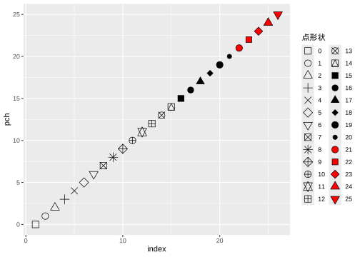
Code
ggplot(mpg, aes(x = displ, y = hwy, linetype = drv)) + #线条类型
geom_smooth()
#> `geom_smooth()` using method = 'loess' and formula = 'y ~ x'
Code
ggplot(mpg, aes(x = displ, y = hwy, linewidth = drv)) + #线条粗细
geom_smooth()
#> Warning: Using linewidth for a discrete variable is not advised.
#> `geom_smooth()` using method = 'loess' and formula = 'y ~ x'
1.2 geometry
-
Graphical primitives:
geom_blank(): display nothing. Most useful for adjusting axes limits using data.geom_point(): points.geom_path(): paths.geom_ribbon(): ribbons, a path with vertical thickness.geom_segment(): a line segment, specified by start and end position.geom_rect(): rectangles.geom_polygon(): filled polygons.geom_text(): text.
-
One variable:
-
Discrete:
-
geom_bar(): display distribution of discrete variable.
-
-
Continuous:
geom_histogram(): bin and count continuous variable, display with bars.geom_density(): smoothed density estimate.geom_dotplot(): stack individual points into a dot plot.geom_freqpoly(): bin and count continuous variable, display with lines.
-
-
Two variables:
-
Both continuous:
geom_point(): scatterplot.geom_quantile(): smoothed quantile regression.geom_rug(): marginal rug plots.geom_smooth(): smoothed line of best fit.geom_text(): text labels.
-
Show distribution:
geom_bin2d(): bin into rectangles and count.geom_density2d(): smoothed 2d density estimate.geom_hex(): bin into hexagons and count.
-
At least one discrete:
geom_count(): count number of point at distinct locationsgeom_jitter(): randomly jitter overlapping points.
-
One continuous, one discrete:
geom_bar(stat = "identity"): a bar chart of precomputed summaries.geom_boxplot(): boxplots.geom_violin(): show density of values in each group.
-
One time, one continuous:
geom_area(): area plot.geom_line(): line plot.geom_step(): step plot.
-
Display uncertainty:
geom_crossbar(): vertical bar with center.geom_errorbar(): error bars.geom_linerange(): vertical line.geom_pointrange(): vertical line with center.
-
Spatial:
-
geom_map(): fast version of for map data.geom_polygon()
-
-
-
Three variables:
geom_contour(): contours.geom_tile(): tile the plane with rectangles.geom_raster(): fast version of for equal sized tiles.geom_tile()
Code
df <- data.frame(
x = c(3, 1, 5),
y = c(2, 4, 6),
label = c("a","b","c")
)
p <- ggplot(df, aes(x, y, label = label)) +
labs(x = NULL, y = NULL) + # Hide axis label
theme(plot.title = element_text(size = 12)) # Shrink plot title
(p + geom_point() + ggtitle("point") +
p + geom_text() + ggtitle("text") +
p + geom_bar(stat = "identity") + ggtitle("bar") )/
(p + geom_tile() + ggtitle("tile") +
p + geom_raster() + ggtitle("raster")+
p + geom_line() + ggtitle("line")) /
(p + geom_area() + ggtitle("area") +
p + geom_path() + ggtitle("path") +
p + geom_polygon() + ggtitle("polygon"))
1.2.1 X=连续型变量
1.2.1.1 geom_point
Code
ggplot(data = mpg) +
geom_point(mapping = aes(x=displ,y=hwy),
stat = "identity",position = "identity")
Code
ggplot(mpg, aes(displ,hwy)) +
geom_point() |
ggplot(mpg, aes(displ,hwy)) +
geom_point(aes(size = displ/10)) +
scale_size_area(name="displ/10")1.2.1.2 geom_line
Code
economics |> head()
#> # A tibble: 6 × 6
#> date pce pop psavert uempmed unemploy
#> <date> <dbl> <dbl> <dbl> <dbl> <dbl>
#> 1 1967-07-01 507. 198712 12.6 4.5 2944
#> 2 1967-08-01 510. 198911 12.6 4.7 2945
#> 3 1967-09-01 516. 199113 11.9 4.6 2958
#> 4 1967-10-01 512. 199311 12.9 4.9 3143
#> 5 1967-11-01 517. 199498 12.8 4.7 3066
#> 6 1967-12-01 525. 199657 11.8 4.8 3018
ggplot(economics,aes(date,pop))+
geom_line()+
scale_x_date()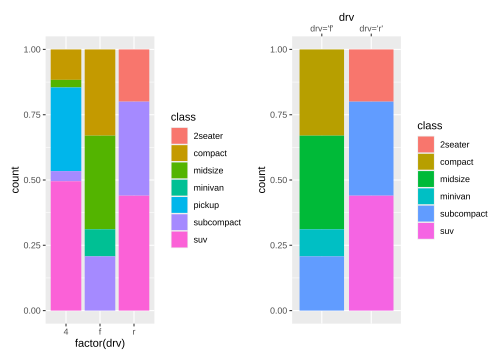
1.2.1.3 geom_smooth
Code
q <- ggplot(mpg, aes(displ, hwy)) +
geom_point()
q+geom_smooth(method = "loess",span = 0.2,se=T) # loess 平滑局部回归 small n
#> `geom_smooth()` using formula = 'y ~ x'
Code
#span 0非常摆动，1不那么摆动
q+ geom_smooth(span = 1) #不很摆动
#> `geom_smooth()` using method = 'loess' and formula = 'y ~ x'
Code
library(MASS)
q+geom_smooth(method = "rlm") # robust linear model 稳健线性模型
#> `geom_smooth()` using formula = 'y ~ x'Code
library(mgcv)
#> Loading required package: nlme
#>
#> Attaching package: 'nlme'
#>
#> The following object is masked from 'package:dplyr':
#>
#> collapse
#>
#> This is mgcv 1.9-1. For overview type 'help("mgcv-package")'.
q+ geom_smooth(method = "gam", formula = y ~ s(x)) # gam 广义相加模型 n>1000
Code
binomial_smooth <- function(...) {
geom_smooth(method = "glm", method.args = list(family = "binomial"), ...)
}
ggplot(rpart::kyphosis,aes(Age,as.numeric(Kyphosis)-1))+
geom_point()+
binomial_smooth()
#> `geom_smooth()` using formula = 'y ~ x'1.2.1.4 geom_histogram
Code
ggplot(mpg, aes(hwy)) + geom_histogram(binwidth = 2.5)
Code
ggplot(mpg, aes(hwy)) +
geom_histogram(binwidth = 1) |
ggplot(mpg, aes(hwy)) +
geom_histogram(aes(weight = displ), binwidth = 1) # 加权Code
ggplot(data = mpg) +
geom_histogram(aes(x=displ,y=after_stat(density)),
stat = "bin",position = "stack",
binwidth = 0.5
) +
scale_y_continuous(labels=scales::percent) +
geom_density(aes(x=displ,y=after_stat(density)),
color="red", linewidth=1)1.2.1.5 geom_bin2d()
Code
smaller <- diamonds |>
dplyr::filter(carat < 3)
ggplot(smaller, aes(x = carat, y = price)) +
geom_bin2d()
Code

1.2.1.6 geom_freqpoly
Code
ggplot(mpg, aes(hwy)) +
geom_freqpoly(binwidth = 2.5)1.2.1.7 geom_density
Code
p <- ggplot(data = mpg)
p + geom_density(aes(displ,fill=drv),
stat = "density",position = "identity",
alpha=0.3
)+
scale_y_continuous(labels = scales::percent)+
labs(fill="图例名")+
theme(legend.position = "top")
1.2.1.8 geom_rug
y→sides="r","l"
x→sides="b","t"

1.2.1.9 geom_jitter
Code
p + geom_jitter(mapping = aes(x=displ,y=hwy),
stat = "identity",position = "jitter")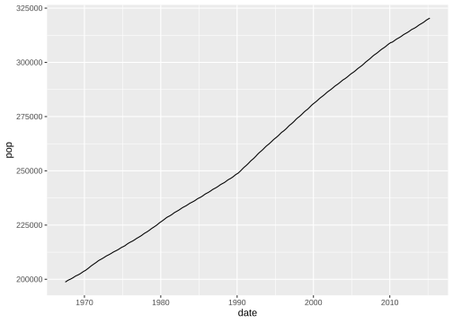
1.2.2 X=离散型变量
1.2.2.1 geom_bar
Code

Code
ggplot(data = mpg) +
geom_col(mapping = aes(x=factor(cyl),y=hwy,fill=drv),
position = "stack") |
ggplot(data = mpg) +
geom_col(mapping = aes(x=factor(cyl),y=hwy,fill=drv),
position = "fill")+
scale_y_continuous(labels = scales::label_percent())有序条形图
1.2.2.2 geom_errorbar
geom_errorbarh
geom_linerange
geom_crossbar
geom_pointrange
Code
y <- c(18, 11, 16)
df <- data.frame(x = 1:3, y = y, se = c(1.2, 0.5, 1.0))
base <- ggplot(df, aes(x, y, ymin = y - se, ymax = y + se))
(base + geom_errorbar()|
base + geom_linerange()|
base + geom_ribbon())/
(base + geom_crossbar()|
base + geom_pointrange()|
base + geom_smooth(stat = "identity"))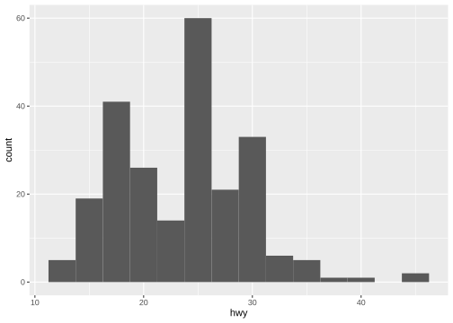
Code
read_csv("data/g.csv") |>
summarise(
mean=mean(liverweight),
sd=sd(liverweight),
.by=treatment
) |>
ggplot(aes(treatment,mean,fill=treatment))+
geom_bar(stat = "identity")+
geom_errorbar(aes(ymin=mean-sd,ymax=mean+sd),width=.2)
#> Rows: 20 Columns: 2
#> ── Column specification ────────────────────────────────────────────────────────
#> Delimiter: ","
#> chr (1): treatment
#> dbl (1): liverweight
#>
#> ℹ Use `spec()` to retrieve the full column specification for this data.
#> ℹ Specify the column types or set `show_col_types = FALSE` to quiet this message.
1.2.2.3 geom_dotplot
Code
ggplot(mpg)+geom_dotplot(mapping = aes(x=drv,y=hwy),
position = "identity",
stackdir = "center",binaxis = 'y',# stacking along y axis
fill="red",binwidth = 0.7)
1.2.2.4 geom_boxplot
Code
ggplot(mpg) + geom_boxplot(mapping = aes(x=drv,y=hwy),
stat = "boxplot",position = "dodge",
notch=TRUE, varwidth=TRUE,
width=0.1,fill="green"
)+
geom_violin(aes(x=drv,y=hwy),alpha=0.2)
1.2.2.5 geom_violin
Code
ggplot(mpg) + geom_violin(mapping = aes(x=drv,y=hwy),
stat = "ydensity",position = "dodge")
1.2.2.6 geom_tile
Code
# 设置随机数种子以确保结果的可重复性
set.seed(10)
# 生成随机数据集
mydata <- tibble(
year = 2000:2024,
lung = runif(25),
liver = runif(25),
bone = runif(25),
luk = runif(25),
eso = runif(25),
gas = runif(25),
eye = runif(25),
brain = runif(25),
pan = runif(25),
kidney = runif(25),
breast= runif(25),
) |> pivot_longer(cols = -1,
names_to = "cancer",
values_to = "morbidity")
ggplot(mydata, aes(year, cancer)) +
geom_tile(aes(fill =morbidity)) +
scale_fill_gradient(low = "white", high = "red")
1.2.3 统计变换 statistical transformations
stat_bin()：geom_bar()，geom_freqpoly()，geom_histogram()
stat_bin2d()：geom_bin2d()
stat_bindot()：geom_dotplot()
stat_binhex()：geom_hex()
stat_boxplot()：geom_boxplot()
stat_contour()：geom_contour()
stat_quantile()：geom_quantile()
stat_smooth()：geom_smooth()
stat_sum()：geom_count()
stat_ecdf()：计算经验累积分布图。
stat_function()：根据 x 值的函数计算 y 值。
stat_summary()：将 Y 值汇总到不同的 X 值。
stat_summary2d() ：汇总分箱值。
stat_summary_hex()
stat_qq()：对分位数-分位数图执行计算。
stat_spoke()：将角度和半径转换为位置。
stat_unique()：删除重复的行。
Code
ggplot(diamonds) +
stat_summary(
aes(x = cut, y = depth),
geom = "errorbar",
fun.min = min,
fun.max = max,
fun = mean
)Code
ggplot(mpg, aes(trans, cty)) +
geom_point() +
stat_summary(geom = "point", fun = "mean", colour = "red", size = 4)
1.2.4 位置调整 position adjustments
1.2.4.1 条
Code

Code

1.2.4.2 点
position_nudge()：按固定偏移量移动点。
position_jitter()：为每个位置添加一点随机噪音。
position_jitterdodge()：躲避组内的点，然后添加一点随机噪音。
Code
ggplot(mpg, aes(x = factor(cyl), y = hwy)) +
geom_point(position = "identity") |
ggplot(mpg, aes(x = factor(cyl), y = hwy)) +
geom_point(position = "jitter")
Code
ggplot(mpg, aes(x = factor(cyl), y = hwy)) +
geom_point(position =position_nudge(x=0.1,y=0))|
ggplot(mpg, aes(x = factor(cyl), y = hwy,color=factor(cyl))) +
geom_point(position = position_jitterdodge())
1.3 坐标系 coordinate
默认坐标系是笛卡尔坐标系
1.4 坐标轴 axis
1.4.1 变换
Code
ggplot(mpg, aes(log10(cty),hwy)) +
geom_point()+
scale_x_log10()
1.4.2 limits
Code
ggplot(mpg, aes(displ, hwy)) +
geom_point(na.rm = TRUE) |
ggplot(mpg, aes(displ, hwy)) +
geom_point(na.rm = TRUE) +
xlim(5, 6) +
ylim(10, 25)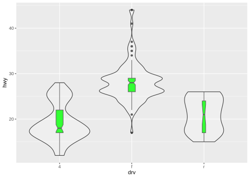
Code
ggplot(mpg, aes(drv, hwy)) +
geom_jitter(width = 0.25, na.rm = TRUE) +
xlim("f", "r") +
ylim(25, NA)
Code
# filter
mpg |>
dplyr::filter(displ >= 5 & displ <= 6 & hwy >= 10 & hwy <= 25) |>
ggplot(aes(x = displ, y = hwy)) +
geom_point(aes(color = drv)) +
geom_smooth(na.rm=TRUE)|
# limits
ggplot(mpg, aes(x = displ, y = hwy)) +
geom_point(aes(color = drv)) +
geom_smooth(na.rm=TRUE) +
scale_x_continuous(limits = c(5, 6)) + #取子集
scale_y_continuous(limits = c(10, 25))
#> `geom_smooth()` using method = 'loess' and formula = 'y ~ x'
#> `geom_smooth()` using method = 'loess' and formula = 'y ~ x'
#> Warning: Removed 202 rows containing missing values or values outside the scale range
#> (`geom_point()`).
1.4.3 zooming
调整绘制的数据,在每个刻度中设置coord_cartesian(xlim= ,ylim= )
Code
ggplot(mpg, aes(x = displ, y = hwy)) +
geom_point(aes(color = drv)) +
geom_smooth() |
ggplot(mpg, aes(x = displ, y = hwy)) +
geom_point(aes(color = drv)) +
geom_smooth()+
coord_cartesian(xlim = c(5, 6), ylim = c(10, 25)) #放大局部
#> `geom_smooth()` using method = 'loess' and formula = 'y ~ x'
#> `geom_smooth()` using method = 'loess' and formula = 'y ~ x'
1.4.4 共享
shared 坐标轴相同
Code
x_scale <- scale_x_continuous(limits = range(mpg$displ))
y_scale <- scale_y_continuous(limits = range(mpg$hwy))
col_scale <- scale_color_discrete(limits = unique(mpg$drv))
ggplot(mpg[mpg$class=="suv",], aes(x = displ, y = hwy, color = drv)) +
geom_point() +
x_scale +
y_scale +
col_scale|
ggplot(mpg[mpg$class=="compact",], aes(x = displ, y = hwy, color = drv)) +
geom_point() +
x_scale +
y_scale +
col_scale
1.5 标题 labels
Code
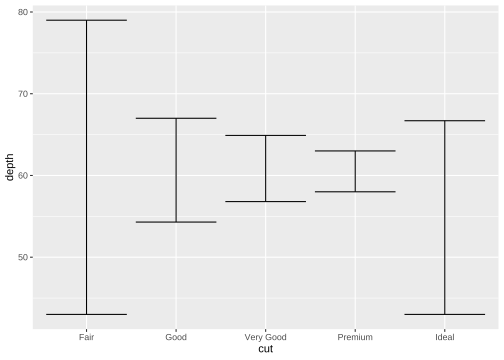
Code
ggplot(mpg, aes(x = displ, y = hwy)) +
geom_point(aes(color = class)) +
geom_smooth(se = FALSE) +
labs(
x = "Engine displacement (L)",
y = "Highway fuel economy (mpg)",
color = "Car type", # 图例 美学映射color
title = "Fuel efficiency generally decreases with engine size",
subtitle = "Two seaters (sports cars) are an
exception because of their light weight",
caption = "Data from fueleconomy.gov"
)
#> `geom_smooth()` using method = 'loess' and formula = 'y ~ x'
1.6 注释 annotation
1.6.1 文本 text
Code

Code

Code

Code
# 自定义
df <- data.frame(
treatment = c("a", "b", "c"),
response = c(1.2, 3.4, 2.5)
)
ggplot(df, aes(treatment, response)) +
geom_point() +
geom_text(
mapping = aes(label = paste0("(", response, ")")),
nudge_x = -0.3,
nudge_y=.2
) 
Code
mtcars |>
group_by(cyl,am) |>
summarise(n=n()) |>
mutate(pct = n / sum(n),
lbls = scales::percent(pct)
)|>
ggplot(aes(factor(cyl),pct,fill=factor(am)))+
geom_bar(stat = "identity",position = "fill")+
geom_text(mapping = aes(label=lbls),
position = position_stack(vjust = 0.5),
size=3
)
#> `summarise()` has grouped output by 'cyl'. You can override using the `.groups`
#> argument.
Code
label_info <- mpg |>
group_by(drv) |>
arrange(desc(displ)) |>
slice_head(n = 1)|>
mutate(
drive_type = case_when( # vectorise multiple if_else () statements
drv == "f" ~ "front-wheel drive",
drv == "r" ~ "rear-wheel drive",
drv == "4" ~ "4-wheel drive")
)|>
dplyr::select(displ, hwy, drv, drive_type)
p <-ggplot(mpg, aes(x = displ, y = hwy, color = drv)) +
geom_point(alpha = 0.3) +
geom_smooth(method="lm",formula="y~x",se = FALSE) +
theme(legend.position = "none")
p+ geom_text(#添加注释 geom_label 标签加背景框
data = label_info,
aes(x = displ, y = hwy, label = drive_type),#label映射
fontface = "bold", size = 5, nudge_y = 2
)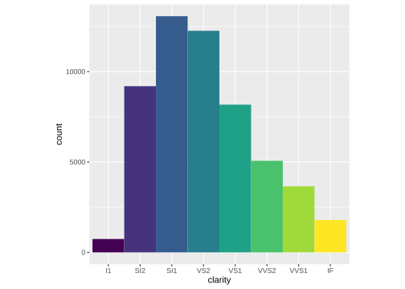
Code
p + ggrepel::geom_label_repel(
data = label_info,
aes(x = displ, y = hwy, label = drive_type),
fontface = "bold", size = 5, nudge_y = 2
) 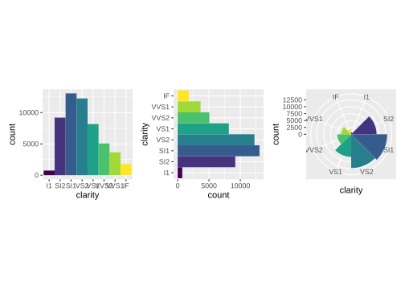
Code
potential_outliers <- mpg |>
dplyr::filter(hwy > 40 | (hwy > 20 & displ > 5))
ggplot(mpg, aes(x = displ, y = hwy)) +
geom_point() +
ggrepel::geom_text_repel(data = potential_outliers, aes(label = model)) +
geom_point(data = potential_outliers, color = "red") +
geom_point(
data = potential_outliers,
color = "red", size = 3, shape = "circle open"
)
1.6.2 markdown
Code
df <- data.frame(x = 1:3, y = 1:3)
base <- ggplot(df, aes(x, y)) +
geom_point() +
labs(x = "Axis title with *italics* and **boldface**")
base |
base + theme(axis.title.x = ggtext::element_markdown()) #ggtext::element_markdown
1.6.3 数学表达式
Code

Code

1.6.4 线段 直线 箭头
geom_hline()
geom_vline()
geom_abline
geom_segment() arrow
Code
trend_text <- "Larger engine sizes tend to have lower fuel economy." |>
str_wrap(width = 30)
trend_text
#> [1] "Larger engine sizes tend to\nhave lower fuel economy."
ggplot(mpg, aes(x = displ, y = hwy)) +
geom_point() +
annotate(
geom = "label", x = 3.5, y = 38,
label = trend_text,
hjust = "left", color = "red"
) +
annotate(
geom = "segment",
x = 3, y = 35, xend = 5, yend = 25, color = "red",
arrow = arrow(type = "closed")
)
Code
p <- ggplot(mpg, aes(displ, hwy)) +
geom_point(
data = dplyr::filter(mpg, manufacturer == "subaru"),
colour = "orange",
size = 3
) +
geom_point()
p|p +
annotate(geom = "point", x = 5.5, y = 40, colour = "orange", size = 3) +
annotate(geom = "point", x = 5.5, y = 40) +
annotate(geom = "text", x = 5.6, y = 40, label = "subaru", hjust = "left")|
p +
annotate(
geom = "curve", x = 4, y = 35, xend = 2.65, yend = 27,
curvature = .3, arrow = arrow(length = unit(2, "mm"))
) +
annotate(geom = "text", x = 4.1, y = 35, label = "subaru", hjust = "left")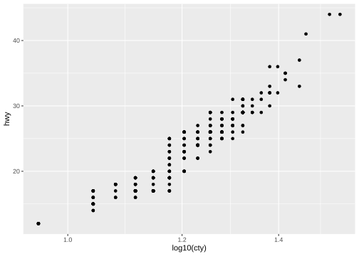
1.7 scale
1.7.1 x/y_continuous
Code
ggplot(mtcars, aes(x = wt, y = mpg)) +
geom_point() +
scale_x_continuous(name = "Weight (1000 lbs.)",
n.breaks = 10,
minor_breaks = NULL,
limits = c(1.5, 5.5)) +
scale_y_continuous(name = "Miles per gallon",
breaks = seq(10, 35, 5),
minor_breaks = seq(10, 35, 1),
limits = c(10, 35)) +
labs(title = "Fuel efficiency by car weight")
Code
ggplot(diamonds, aes(x = price, y = cut)) +
geom_boxplot(alpha = 0.05) +
scale_x_continuous(labels = scales::label_dollar(scale = 1/1000, suffix = "K"))
Code
ggplot(diamonds, aes(x = cut, fill = clarity)) +
geom_bar(position = "fill") +
scale_y_continuous(name = "Percentage", labels = scales::label_percent())
1.7.2 x/y_discrete
Code
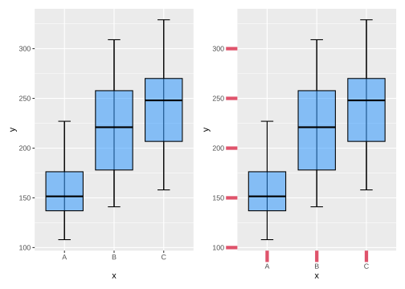
1.7.3 color
Code
RColorBrewer::display.brewer.all()
Code
p <- ggplot(mpg, aes(x=displ, y=hwy, color=drv)) +
geom_point(shape=19, size=3)
p + ggthemes::scale_color_colorblind()
Code
p <- ggplot(mpg, aes(x=displ, y=hwy, color=cty)) +
geom_point()
p + ggtitle("A. Default color gradient")|
p + scale_color_gradient(low="grey", high="black") +
ggtitle("B. Greyscale gradient")|
p + scale_color_gradient(low="red", high="blue") +
ggtitle("C. Red-blue color gradient")
Code
p + scale_color_steps(low="red", high="blue") +
ggtitle("D. Red-blue binned color Gradient")|
p + scale_color_steps2(low="red", mid="white", high="blue",
midpoint=median(mtcars$disp)) +
ggtitle("E. Red-white-blue binned gradient")|
p + scale_color_viridis_c(direction = -1) + # viridis_c,d,b
ggtitle("F. Viridis color gradient")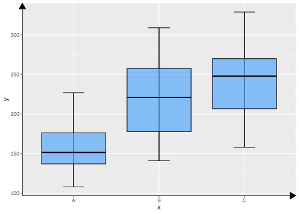
Code
df <- tibble(
x = rnorm(10000),
y = rnorm(10000)
)
ggplot(df, aes(x, y)) +
geom_hex() +
coord_fixed() +
labs(title = "Default, continuous", x = NULL, y = NULL)
#> Warning: Computation failed in `stat_binhex()`.
#> Caused by error in `compute_group()`:
#> ! The package "hexbin" is required for `stat_bin_hex()`.
Code
ggplot(df, aes(x, y)) +
geom_hex() +
coord_fixed() +
scale_fill_viridis_c() +
labs(title = "Viridis, continuous", x = NULL, y = NULL)
#> Warning: Computation failed in `stat_binhex()`.
#> Caused by error in `compute_group()`:
#> ! The package "hexbin" is required for `stat_bin_hex()`.Code
ggplot(df, aes(x, y)) +
geom_hex() +
coord_fixed() +
scale_fill_viridis_b() +
labs(title = "Viridis, binned", x = NULL, y = NULL)
#> Warning: Computation failed in `stat_binhex()`.
#> Caused by error in `compute_group()`:
#> ! The package "hexbin" is required for `stat_bin_hex()`.1.7.4 fill
Code
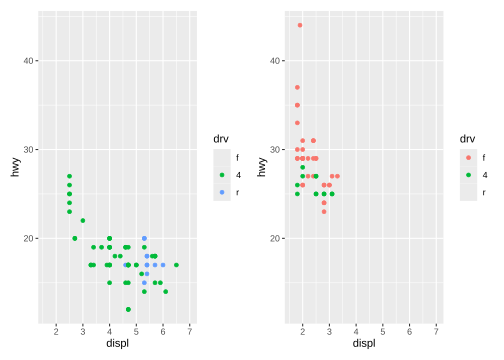
Code
p + scale_fill_viridis_d() +
ggtitle("C. Viridis color scheme")|
p + scale_fill_manual(values=c("gold4", "orange2", "deepskyblue3", "blue4",
"brown2", "yellowgreen","lightpink")) +
ggtitle("D. Manual color selection")
1.8 分面
Code
q <- ggplot(mpg,aes(x=displ))+
geom_histogram(fill="lightblue")
# 一个分类变量
q + facet_wrap(~drv,nrow = 3)
#> `stat_bin()` using `bins = 30`. Pick better value with `binwidth`.
Code
q + facet_wrap(~drv,ncol = 3) #
#> `stat_bin()` using `bins = 30`. Pick better value with `binwidth`.
Code
# 多个分类变量
q + facet_grid(drv~class)
#> `stat_bin()` using `bins = 30`. Pick better value with `binwidth`.
Code
q + facet_grid(drv~.)
#> `stat_bin()` using `bins = 30`. Pick better value with `binwidth`.
Code
q + facet_grid(.~drv) #
#> `stat_bin()` using `bins = 30`. Pick better value with `binwidth`.
Code
ggplot(mpg, aes(x = displ, y = hwy)) +
geom_point() +
facet_grid(drv ~ cyl) |
ggplot(mpg, aes(x = displ, y = hwy)) +
geom_point() +
facet_grid(drv ~ cyl, scales = "free_y")
1.9 主题
1.9.1 内置主题
Code

Code
p + theme_minimal() + labs(title = "theme_minimal")|
p + theme_classic() + labs(title = "theme_classic")
1.9.2 字体
Code
findfont <- function(x){
suppressMessages(require(showtext))
suppressMessages(require(dplyr))
dplyr::filter(font_files(), grepl(x, family, ignore.case=TRUE)) |>
dplyr::select(path, file, family, face)
}
findfont("comic")
#> path file family face
#> 1 C:/Windows/Fonts comic.ttf Comic Sans MS Regular
#> 2 C:/Windows/Fonts comicbd.ttf Comic Sans MS Bold
#> 3 C:/Windows/Fonts comici.ttf Comic Sans MS Italic
#> 4 C:/Windows/Fonts comicz.ttf Comic Sans MS Bold Italic
font_add(family = "Times New Roman", regular = "C:\\Windows\\Fonts\\Times New Roman\\times.ttf",
bold = "C:\\Windows\\Fonts\\Times New Roman\\timesbd.ttf",
italic = "C:\\Windows\\Fonts\\Times New Roman\\timesi.ttf",
bolditalic = "C:\\Windows\\Fonts\\Times New Roman\\timesbi.ttf")
findfont("Times New Roman")
#> path file family face
#> 1 C:/Windows/Fonts times.ttf Times New Roman Regular
#> 2 C:/Windows/Fonts timesbd.ttf Times New Roman Bold
#> 3 C:/Windows/Fonts timesbi.ttf Times New Roman Bold Italic
#> 4 C:/Windows/Fonts timesi.ttf Times New Roman Italic
font_families()
#> [1] "sans" "serif"
#> [3] "mono" "wqy-microhei"
#> [5] "Times New Roman Regular" "Times New Roman Bold"
#> [7] "Times New Roman Bold Italic" "Times New Roman Italic"
#> [9] "黑体 常规" "楷体 常规"
#> [11] "Times New Roman"1.9.3 自定义主题
Code
mytheme <- theme(plot.title=element_text(face="bold.italic", size="14", color="brown"),
axis.title=element_text(face="bold.italic", size=10, color="brown"),
axis.text=element_text(face="bold", size=9, color="darkblue"),
panel.background=element_rect(fill="white", color="darkblue"),
panel.grid.major.y=element_line(color="grey", linetype=1),
panel.grid.minor.y=element_line(color="grey", linetype=2),
panel.grid.minor.x=element_blank(), legend.position="top")
ggplot(mpg, aes(x=drv, y=hwy, fill=drv)) +
geom_boxplot() +
mytheme 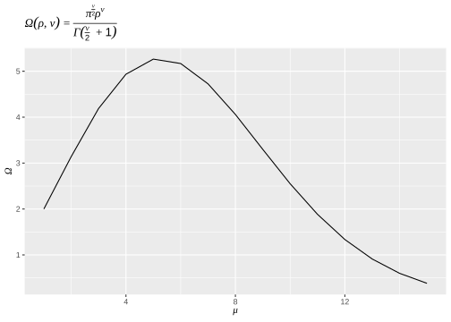
1.9.4 图例
Code
# 位置和布局
base <- ggplot(mpg, aes(x = displ, y = hwy)) +
geom_point(aes(color = class))
base + theme(legend.position = "right") # the default
Code
base + theme(legend.position = "left")
Code
base +
theme(legend.position = "top") +
guides(color = guide_legend(nrow = 3))Code
base +
theme(legend.position = "bottom") +
guides(color = guide_legend(nrow = 2, override.aes = list(size = 4)))Code
# 文本
ggplot(mtcars, aes(wt, mpg, color = factor(cyl))) +
geom_point(size=3) +
scale_color_discrete(name="Cylinders") +
labs(title = "Fuel Efficiency for 32 Automobiles",
x = "Weight (1000 lbs)",
y = "Miles per gallon") +
theme(legend.position = c(.95, .95),
legend.justification = c(1, 1),
legend.background = element_rect(fill = "lightgrey",
color = "white",
linewidth = 1),
legend.key = element_blank(),
legend.direction = "horizontal")
#> Warning: A numeric `legend.position` argument in `theme()` was deprecated in ggplot2
#> 3.5.0.
#> ℹ Please use the `legend.position.inside` argument of `theme()` instead.Code
ggplot(mpg, aes(x = displ, y = hwy, color = drv)) +
geom_point() +
labs(
title = "Larger engine sizes tend to have lower fuel economy",
caption = "Source: https://fueleconomy.gov."
) +
theme(
legend.position = c(0.8, 0.9),
legend.direction = "horizontal",
legend.box.background = element_rect(color = "blue"),
plot.title = element_text(face = "bold",hjust = 0.5),
plot.title.position = "plot",
plot.caption.position = "plot",
plot.caption = element_text(hjust = 1)
)
1.9.5 绘图区
Code
mtcars$am <- factor(mtcars$am, labels = c("Automatic", "Manual"))
ggplot(data=mtcars, aes(x = disp, y = mpg)) +
geom_point(aes(color=factor(cyl)), size=2) +
geom_smooth(method="lm", formula = y ~ x + I(x^2),
linetype="dotted", se=FALSE) +
scale_color_discrete("Number of cylinders") +
facet_wrap(~am, ncol=2) +
labs(title = "Mileage, transmission type, and number of cylinders",
x = "Engine displacement (cu. in.)",
y = "Miles per gallon") +
theme_bw() +
theme(strip.background = element_rect(fill = "white"),
panel.grid.major = element_line(color="lightgrey"),
panel.grid.minor = element_line(color="lightgrey",
linetype="dashed"),
axis.ticks = element_blank(),
legend.position = "bottom",
legend.key = element_blank())1.10 图形布局patchwork
1.10.1 布局方式
Code
p1 <- ggplot(mpg, aes(x = drv, y = cty, color = drv)) +
geom_boxplot(show.legend = FALSE) +
labs(title = "Plot 1")
p2 <- ggplot(mpg, aes(x = drv, y = hwy, color = drv)) +
geom_boxplot(show.legend = FALSE) +
labs(title = "Plot 2")
p3 <- ggplot(mpg, aes(x = cty, color = drv, fill = drv)) +
geom_density(alpha = 0.5) +
labs(title = "Plot 3")
p4 <- ggplot(mpg, aes(x = hwy, color = drv, fill = drv)) +
geom_density(alpha = 0.5) +
labs(title = "Plot 4")
p5 <- ggplot(mpg, aes(x = cty, y = hwy, color = drv)) +
geom_point(show.legend = FALSE) +
facet_wrap(~drv) +
labs(title = "Plot 5")Code
p1 + p2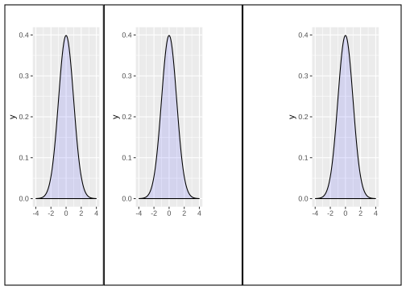
Code
p1 + p2 + p3 + p4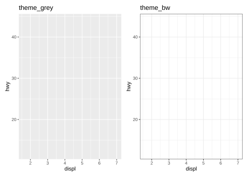
Code
p1 + p2 + p3 + plot_layout(ncol = 2)Code
p1 / p2Code
p3 | p4
Code
p3 | (p2 / (p1 | p4))Code
layout <- "
AAB
C#B
CDD
"
p1 + p2 + p3 + p4 + plot_layout(design = layout)Code
p1 + p2 + p3 + plot_layout(ncol = 2, guides = "collect")1.10.2 修改子图
Code
p12 <- p1 + p2
p12[[2]] <- p12[[2]] + theme_light()
p12
Code
p1 + p4 & theme_minimal()Code
p1 + p4 & scale_y_continuous(limits = c(NA, 45))1.10.3 添加注释
Code
(p1 | p2) / p3 +
plot_annotation(title = '主标题',caption = "脚注",
theme = theme_gray(base_family = "mono")) &theme_minimal()+
theme(axis.title = element_text(size=8),
axis.text = element_text(size=8)
)Code
(guide_area() / (p1 + p2) / (p3 + p4) / p5) +
plot_annotation(
title = "City and highway mileage for cars with different drive trains",
caption = "Source: https://fueleconomy.gov."
) +
plot_layout(
guides = "collect",
heights = c(1, 3, 2, 4)
) &
theme(legend.position = "top",
plot.title = element_text(hjust = 0.5))1.10.4 图形编号
Code
p123 <- p1 | (p2 / p3)
p123 + plot_annotation(tag_levels = "I") # Uppercase roman numerics iCode
p123 + plot_annotation(tag_levels = "a") # lowercase letters ACode
p123 + plot_annotation(tag_levels = "1") # numbersCode
p123[[2]] 
Code
p123[[2]] <- p123[[2]] + plot_layout(tag_level = "new")
p123 + plot_annotation(tag_levels = c("I","a"))1.10.5 图形插入
Code
p1 + inset_element(p2, left = 0.6, bottom = 0.6, right = 1, top = 1)Code
p24 <- p2 / p4 + plot_layout(guides = "collect")
p1 + inset_element(p24, left = 0.5, bottom = 0.05, right = 0.95, top = 0.9)Code
p12 <- p1 + inset_element(p2, left = 0.5, bottom = 0.5, right = 0.9, top = 0.95)
p12 & theme_bw()Code
p12 + plot_annotation(tag_levels = "A")1.11 保存和删除
1.12 ggplot2 的内部结构
Code
p <- ggplot(mpg, aes(displ, hwy, color = drv)) +
geom_point(position = "jitter") +
geom_smooth(method = "lm", formula = y ~ x) +
facet_wrap(vars(year)) +
ggtitle("A plot for expository purposes")
p
Code
ggprint <- function(x) {
data <- ggplot_build(x)
gtable <- ggplot_gtable(data)
grid::grid.newpage()
grid::grid.draw(gtable)
return(invisible(x))
}
ggprint(p)
Code
p_built <- ggplot_build(p)
p_built $data
#> [[1]]
#> colour x y PANEL group shape size fill alpha stroke
#> 1 #00BA38 1.767385 29.04692 1 2 19 1.5 NA NA 0.5
#> 2 #00BA38 1.779773 29.15194 1 2 19 1.5 NA NA 0.5
#> 3 #00BA38 1.976448 30.77814 2 2 19 1.5 NA NA 0.5
#> 4 #00BA38 1.970823 30.37771 2 2 19 1.5 NA NA 0.5
#> 5 #00BA38 2.786053 25.70846 1 2 19 1.5 NA NA 0.5
#> 6 #00BA38 2.831331 25.73572 1 2 19 1.5 NA NA 0.5
#> 7 #00BA38 3.084410 27.01035 2 2 19 1.5 NA NA 0.5
#> 8 #F8766D 1.806981 25.99238 1 1 19 1.5 NA NA 0.5
#> 9 #F8766D 1.787019 24.96076 1 1 19 1.5 NA NA 0.5
#> 10 #F8766D 2.037209 28.32164 2 1 19 1.5 NA NA 0.5
#> 11 #F8766D 2.031835 26.73734 2 1 19 1.5 NA NA 0.5
#> 12 #F8766D 2.803323 24.61591 1 1 19 1.5 NA NA 0.5
#> 13 #F8766D 2.821173 24.93911 1 1 19 1.5 NA NA 0.5
#> 14 #F8766D 3.093628 24.64943 2 1 19 1.5 NA NA 0.5
#> 15 #F8766D 3.082713 25.13807 2 1 19 1.5 NA NA 0.5
#> 16 #F8766D 2.769765 23.99082 1 1 19 1.5 NA NA 0.5
#> 17 #F8766D 3.114283 25.25673 2 1 19 1.5 NA NA 0.5
#> 18 #F8766D 4.236953 23.33551 2 1 19 1.5 NA NA 0.5
#> 19 #619CFF 5.335211 20.37053 2 3 19 1.5 NA NA 0.5
#> 20 #619CFF 5.321781 14.81809 2 3 19 1.5 NA NA 0.5
#> 21 #619CFF 5.283038 19.71366 2 3 19 1.5 NA NA 0.5
#> 22 #619CFF 5.671630 17.36100 1 3 19 1.5 NA NA 0.5
#> 23 #619CFF 6.038297 17.10525 2 3 19 1.5 NA NA 0.5
#> 24 #619CFF 5.732564 25.74664 1 3 19 1.5 NA NA 0.5
#> 25 #619CFF 5.676562 22.60204 1 3 19 1.5 NA NA 0.5
#> 26 #619CFF 6.187115 25.98762 2 3 19 1.5 NA NA 0.5
#> 27 #619CFF 6.175819 24.87986 2 3 19 1.5 NA NA 0.5
#> 28 #619CFF 7.028669 24.12225 2 3 19 1.5 NA NA 0.5
#> 29 #F8766D 5.321105 19.05622 2 1 19 1.5 NA NA 0.5
#> 30 #F8766D 5.278746 14.34140 2 1 19 1.5 NA NA 0.5
#> 31 #F8766D 5.704519 15.13107 1 1 19 1.5 NA NA 0.5
#> 32 #F8766D 6.500463 16.60401 1 1 19 1.5 NA NA 0.5
#> 33 #00BA38 2.396365 27.33542 1 2 19 1.5 NA NA 0.5
#> 34 #00BA38 2.390231 29.83168 2 2 19 1.5 NA NA 0.5
#> 35 #00BA38 3.112008 25.74484 1 2 19 1.5 NA NA 0.5
#> 36 #00BA38 3.534620 29.03418 2 2 19 1.5 NA NA 0.5
#> 37 #00BA38 3.622772 25.74189 2 2 19 1.5 NA NA 0.5
#> 38 #00BA38 2.380276 23.90531 1 2 19 1.5 NA NA 0.5
#> 39 #00BA38 3.023258 23.82610 1 2 19 1.5 NA NA 0.5
#> 40 #00BA38 3.336608 21.79428 1 2 19 1.5 NA NA 0.5
#> 41 #00BA38 3.276630 22.24435 1 2 19 1.5 NA NA 0.5
#> 42 #00BA38 3.325406 24.29460 2 2 19 1.5 NA NA 0.5
#> 43 #00BA38 3.271618 23.67997 2 2 19 1.5 NA NA 0.5
#> 44 #00BA38 3.283089 17.33850 2 2 19 1.5 NA NA 0.5
#> 45 #00BA38 3.816214 22.30670 1 2 19 1.5 NA NA 0.5
#> 46 #00BA38 3.803259 21.25791 1 2 19 1.5 NA NA 0.5
#> 47 #00BA38 3.839192 23.21158 2 2 19 1.5 NA NA 0.5
#> 48 #00BA38 4.024944 23.08708 2 2 19 1.5 NA NA 0.5
#> 49 #F8766D 3.722582 18.72062 2 1 19 1.5 NA NA 0.5
#> 50 #F8766D 3.723848 18.02785 2 1 19 1.5 NA NA 0.5
#> 51 #F8766D 3.862451 17.34612 1 1 19 1.5 NA NA 0.5
#> 52 #F8766D 3.924025 16.73514 1 1 19 1.5 NA NA 0.5
#> 53 #F8766D 4.720194 19.34077 2 1 19 1.5 NA NA 0.5
#> 54 #F8766D 4.715034 19.29608 2 1 19 1.5 NA NA 0.5
#> 55 #F8766D 4.708938 11.87173 2 1 19 1.5 NA NA 0.5
#> 56 #F8766D 5.208688 17.17428 1 1 19 1.5 NA NA 0.5
#> 57 #F8766D 5.202502 15.21981 1 1 19 1.5 NA NA 0.5
#> 58 #F8766D 3.872759 17.19270 1 1 19 1.5 NA NA 0.5
#> 59 #F8766D 4.738936 17.27737 2 1 19 1.5 NA NA 0.5
#> 60 #F8766D 4.697238 12.03239 2 1 19 1.5 NA NA 0.5
#> 61 #F8766D 4.733710 16.78488 2 1 19 1.5 NA NA 0.5
#> 62 #F8766D 5.230557 16.30768 1 1 19 1.5 NA NA 0.5
#> 63 #F8766D 5.691053 18.16418 2 1 19 1.5 NA NA 0.5
#> 64 #F8766D 5.919106 14.66299 1 1 19 1.5 NA NA 0.5
#> 65 #F8766D 4.739009 16.04133 2 1 19 1.5 NA NA 0.5
#> 66 #F8766D 4.700964 11.71892 2 1 19 1.5 NA NA 0.5
#> 67 #F8766D 4.722044 16.72389 2 1 19 1.5 NA NA 0.5
#> 68 #F8766D 4.726070 17.28553 2 1 19 1.5 NA NA 0.5
#> 69 #F8766D 4.734337 16.11048 2 1 19 1.5 NA NA 0.5
#> 70 #F8766D 4.730609 11.76769 2 1 19 1.5 NA NA 0.5
#> 71 #F8766D 5.178997 14.78657 1 1 19 1.5 NA NA 0.5
#> 72 #F8766D 5.201561 15.75372 1 1 19 1.5 NA NA 0.5
#> 73 #F8766D 5.724607 16.76480 2 1 19 1.5 NA NA 0.5
#> 74 #F8766D 5.868224 15.36175 1 1 19 1.5 NA NA 0.5
#> 75 #619CFF 4.566835 17.09052 1 3 19 1.5 NA NA 0.5
#> 76 #619CFF 5.409523 17.03880 1 3 19 1.5 NA NA 0.5
#> 77 #619CFF 5.438758 17.63823 2 3 19 1.5 NA NA 0.5
#> 78 #F8766D 3.961246 17.14821 1 1 19 1.5 NA NA 0.5
#> 79 #F8766D 3.964623 19.37334 1 1 19 1.5 NA NA 0.5
#> 80 #F8766D 4.029912 17.25249 1 1 19 1.5 NA NA 0.5
#> 81 #F8766D 4.030852 19.39677 2 1 19 1.5 NA NA 0.5
#> 82 #F8766D 4.573844 18.60666 2 1 19 1.5 NA NA 0.5
#> 83 #F8766D 4.996931 16.88502 1 1 19 1.5 NA NA 0.5
#> 84 #F8766D 4.227030 16.61598 1 1 19 1.5 NA NA 0.5
#> 85 #F8766D 4.200593 16.74958 1 1 19 1.5 NA NA 0.5
#> 86 #F8766D 4.587502 15.67467 1 1 19 1.5 NA NA 0.5
#> 87 #F8766D 4.577617 16.39744 1 1 19 1.5 NA NA 0.5
#> 88 #F8766D 4.639492 16.89370 2 1 19 1.5 NA NA 0.5
#> 89 #F8766D 5.413256 15.38495 1 1 19 1.5 NA NA 0.5
#> 90 #F8766D 5.395187 17.18730 2 1 19 1.5 NA NA 0.5
#> 91 #619CFF 3.824527 25.63775 1 3 19 1.5 NA NA 0.5
#> 92 #619CFF 3.802077 25.02959 1 3 19 1.5 NA NA 0.5
#> 93 #619CFF 4.025991 25.89732 2 3 19 1.5 NA NA 0.5
#> 94 #619CFF 3.973712 24.27180 2 3 19 1.5 NA NA 0.5
#> 95 #619CFF 4.593057 20.65600 1 3 19 1.5 NA NA 0.5
#> 96 #619CFF 4.571709 22.23025 1 3 19 1.5 NA NA 0.5
#> 97 #619CFF 4.606725 22.67764 2 3 19 1.5 NA NA 0.5
#> 98 #619CFF 4.612550 21.96620 2 3 19 1.5 NA NA 0.5
#> 99 #619CFF 5.433011 20.14043 2 3 19 1.5 NA NA 0.5
#> 100 #00BA38 1.608225 32.82401 1 2 19 1.5 NA NA 0.5
#> 101 #00BA38 1.560008 31.69745 1 2 19 1.5 NA NA 0.5
#> 102 #00BA38 1.579337 31.61259 1 2 19 1.5 NA NA 0.5
#> 103 #00BA38 1.600461 29.22821 1 2 19 1.5 NA NA 0.5
#> 104 #00BA38 1.638751 31.69464 1 2 19 1.5 NA NA 0.5
#> 105 #00BA38 1.777011 33.97055 2 2 19 1.5 NA NA 0.5
#> 106 #00BA38 1.796975 35.80591 2 2 19 1.5 NA NA 0.5
#> 107 #00BA38 1.835005 35.69425 2 2 19 1.5 NA NA 0.5
#> 108 #00BA38 1.984558 28.70598 2 2 19 1.5 NA NA 0.5
#> 109 #00BA38 2.363958 26.19613 1 2 19 1.5 NA NA 0.5
#> 110 #00BA38 2.368529 26.63068 1 2 19 1.5 NA NA 0.5
#> 111 #00BA38 2.405860 30.02787 2 2 19 1.5 NA NA 0.5
#> 112 #00BA38 2.381869 30.73507 2 2 19 1.5 NA NA 0.5
#> 113 #00BA38 2.481247 26.33764 1 2 19 1.5 NA NA 0.5
#> 114 #00BA38 2.461744 25.90365 1 2 19 1.5 NA NA 0.5
#> 115 #00BA38 3.312542 28.12287 2 2 19 1.5 NA NA 0.5
#> 116 #00BA38 1.960408 25.85143 1 2 19 1.5 NA NA 0.5
#> 117 #00BA38 2.011533 29.33392 1 2 19 1.5 NA NA 0.5
#> 118 #00BA38 2.004485 28.39719 2 2 19 1.5 NA NA 0.5
#> 119 #00BA38 2.038957 27.37574 2 2 19 1.5 NA NA 0.5
#> 120 #00BA38 2.720188 24.06923 2 2 19 1.5 NA NA 0.5
#> 121 #00BA38 2.681605 24.16771 2 2 19 1.5 NA NA 0.5
#> 122 #00BA38 2.664355 23.76682 2 2 19 1.5 NA NA 0.5
#> 123 #F8766D 2.984553 22.37968 2 1 19 1.5 NA NA 0.5
#> 124 #F8766D 3.683057 18.72318 2 1 19 1.5 NA NA 0.5
#> 125 #F8766D 3.974925 19.93581 1 1 19 1.5 NA NA 0.5
#> 126 #F8766D 4.697462 16.69238 1 1 19 1.5 NA NA 0.5
#> 127 #F8766D 4.688008 11.64583 2 1 19 1.5 NA NA 0.5
#> 128 #F8766D 4.661013 19.11923 2 1 19 1.5 NA NA 0.5
#> 129 #F8766D 5.709572 18.26909 2 1 19 1.5 NA NA 0.5
#> 130 #F8766D 6.112262 14.17454 2 1 19 1.5 NA NA 0.5
#> 131 #F8766D 4.035512 14.87325 1 1 19 1.5 NA NA 0.5
#> 132 #F8766D 4.213724 18.08884 2 1 19 1.5 NA NA 0.5
#> 133 #F8766D 4.373704 18.37230 2 1 19 1.5 NA NA 0.5
#> 134 #F8766D 4.562636 14.79030 1 1 19 1.5 NA NA 0.5
#> 135 #619CFF 5.425738 16.76789 1 3 19 1.5 NA NA 0.5
#> 136 #619CFF 5.397741 16.21305 1 3 19 1.5 NA NA 0.5
#> 137 #619CFF 5.397364 18.32279 2 3 19 1.5 NA NA 0.5
#> 138 #F8766D 4.003754 17.32114 1 1 19 1.5 NA NA 0.5
#> 139 #F8766D 4.006280 19.18473 2 1 19 1.5 NA NA 0.5
#> 140 #F8766D 4.600332 18.70711 2 1 19 1.5 NA NA 0.5
#> 141 #F8766D 5.004909 17.18179 1 1 19 1.5 NA NA 0.5
#> 142 #00BA38 2.380109 28.68962 1 2 19 1.5 NA NA 0.5
#> 143 #00BA38 2.361079 26.92399 1 2 19 1.5 NA NA 0.5
#> 144 #00BA38 2.464177 30.72788 2 2 19 1.5 NA NA 0.5
#> 145 #00BA38 2.467865 32.20935 2 2 19 1.5 NA NA 0.5
#> 146 #00BA38 3.520032 27.31879 2 2 19 1.5 NA NA 0.5
#> 147 #00BA38 3.506839 25.94509 2 2 19 1.5 NA NA 0.5
#> 148 #00BA38 2.961881 26.17307 1 2 19 1.5 NA NA 0.5
#> 149 #00BA38 2.970279 25.26556 1 2 19 1.5 NA NA 0.5
#> 150 #00BA38 3.515182 24.66823 2 2 19 1.5 NA NA 0.5
#> 151 #F8766D 3.294832 17.37844 1 1 19 1.5 NA NA 0.5
#> 152 #F8766D 3.287630 16.66878 1 1 19 1.5 NA NA 0.5
#> 153 #F8766D 4.025586 19.93104 2 1 19 1.5 NA NA 0.5
#> 154 #F8766D 5.575201 18.34750 2 1 19 1.5 NA NA 0.5
#> 155 #00BA38 3.100411 26.30478 1 2 19 1.5 NA NA 0.5
#> 156 #00BA38 3.809106 25.87914 1 2 19 1.5 NA NA 0.5
#> 157 #00BA38 3.836894 27.32127 1 2 19 1.5 NA NA 0.5
#> 158 #00BA38 3.816914 27.63282 2 2 19 1.5 NA NA 0.5
#> 159 #00BA38 5.281958 25.36105 2 2 19 1.5 NA NA 0.5
#> 160 #F8766D 2.479656 25.14643 1 1 19 1.5 NA NA 0.5
#> 161 #F8766D 2.517608 23.73414 1 1 19 1.5 NA NA 0.5
#> 162 #F8766D 2.476203 27.08829 2 1 19 1.5 NA NA 0.5
#> 163 #F8766D 2.488423 25.03779 2 1 19 1.5 NA NA 0.5
#> 164 #F8766D 2.467977 25.95023 2 1 19 1.5 NA NA 0.5
#> 165 #F8766D 2.484887 23.34113 2 1 19 1.5 NA NA 0.5
#> 166 #F8766D 2.194877 25.95766 1 1 19 1.5 NA NA 0.5
#> 167 #F8766D 2.195964 26.04226 1 1 19 1.5 NA NA 0.5
#> 168 #F8766D 2.494856 25.76958 1 1 19 1.5 NA NA 0.5
#> 169 #F8766D 2.460401 26.28052 1 1 19 1.5 NA NA 0.5
#> 170 #F8766D 2.534661 24.94254 2 1 19 1.5 NA NA 0.5
#> 171 #F8766D 2.518775 27.38090 2 1 19 1.5 NA NA 0.5
#> 172 #F8766D 2.460154 25.20343 2 1 19 1.5 NA NA 0.5
#> 173 #F8766D 2.499887 27.14608 2 1 19 1.5 NA NA 0.5
#> 174 #F8766D 2.678748 19.81460 1 1 19 1.5 NA NA 0.5
#> 175 #F8766D 2.729221 20.12069 1 1 19 1.5 NA NA 0.5
#> 176 #F8766D 3.410290 18.82957 1 1 19 1.5 NA NA 0.5
#> 177 #F8766D 3.424672 16.83292 1 1 19 1.5 NA NA 0.5
#> 178 #F8766D 3.990400 20.28926 2 1 19 1.5 NA NA 0.5
#> 179 #F8766D 4.678479 16.93172 2 1 19 1.5 NA NA 0.5
#> 180 #00BA38 2.213521 28.62611 1 2 19 1.5 NA NA 0.5
#> 181 #00BA38 2.169546 27.34342 1 2 19 1.5 NA NA 0.5
#> 182 #00BA38 2.407445 30.91564 2 2 19 1.5 NA NA 0.5
#> 183 #00BA38 2.428250 31.24281 2 2 19 1.5 NA NA 0.5
#> 184 #00BA38 2.991238 25.63111 1 2 19 1.5 NA NA 0.5
#> 185 #00BA38 3.005920 26.18163 1 2 19 1.5 NA NA 0.5
#> 186 #00BA38 3.509076 28.03780 2 2 19 1.5 NA NA 0.5
#> 187 #00BA38 2.191874 26.98147 1 2 19 1.5 NA NA 0.5
#> 188 #00BA38 2.233795 28.72760 1 2 19 1.5 NA NA 0.5
#> 189 #00BA38 2.415032 31.16068 2 2 19 1.5 NA NA 0.5
#> 190 #00BA38 2.423621 31.10122 2 2 19 1.5 NA NA 0.5
#> 191 #00BA38 2.998445 26.01762 1 2 19 1.5 NA NA 0.5
#> 192 #00BA38 3.036241 25.67349 1 2 19 1.5 NA NA 0.5
#> 193 #00BA38 3.294233 27.34421 2 2 19 1.5 NA NA 0.5
#> 194 #00BA38 1.819298 30.22380 1 2 19 1.5 NA NA 0.5
#> 195 #00BA38 1.775591 32.85051 1 2 19 1.5 NA NA 0.5
#> 196 #00BA38 1.768322 34.92110 1 2 19 1.5 NA NA 0.5
#> 197 #00BA38 1.771558 37.32308 2 2 19 1.5 NA NA 0.5
#> 198 #00BA38 1.831336 35.31736 2 2 19 1.5 NA NA 0.5
#> 199 #F8766D 4.711513 15.18389 1 1 19 1.5 NA NA 0.5
#> 200 #F8766D 5.735524 17.81366 2 1 19 1.5 NA NA 0.5
#> 201 #F8766D 2.687634 19.90851 1 1 19 1.5 NA NA 0.5
#> 202 #F8766D 2.722330 19.82888 1 1 19 1.5 NA NA 0.5
#> 203 #F8766D 2.705133 21.76738 2 1 19 1.5 NA NA 0.5
#> 204 #F8766D 3.394128 16.70186 1 1 19 1.5 NA NA 0.5
#> 205 #F8766D 3.392817 19.38064 1 1 19 1.5 NA NA 0.5
#> 206 #F8766D 3.964371 17.83500 2 1 19 1.5 NA NA 0.5
#> 207 #F8766D 4.006347 19.94960 2 1 19 1.5 NA NA 0.5
#> 208 #00BA38 1.991503 29.08912 1 2 19 1.5 NA NA 0.5
#> 209 #00BA38 1.960542 25.61566 1 2 19 1.5 NA NA 0.5
#> 210 #00BA38 1.988835 28.72385 2 2 19 1.5 NA NA 0.5
#> 211 #00BA38 2.037926 29.03832 2 2 19 1.5 NA NA 0.5
#> 212 #00BA38 2.808537 24.31205 1 2 19 1.5 NA NA 0.5
#> 213 #00BA38 1.919795 44.36579 1 2 19 1.5 NA NA 0.5
#> 214 #00BA38 1.983528 28.96789 1 2 19 1.5 NA NA 0.5
#> 215 #00BA38 1.987543 26.24385 1 2 19 1.5 NA NA 0.5
#> 216 #00BA38 2.017406 29.25582 2 2 19 1.5 NA NA 0.5
#> 217 #00BA38 1.995187 28.65331 2 2 19 1.5 NA NA 0.5
#> 218 #00BA38 2.525185 28.83494 2 2 19 1.5 NA NA 0.5
#> 219 #00BA38 2.502464 29.38374 2 2 19 1.5 NA NA 0.5
#> 220 #00BA38 2.775895 23.12603 1 2 19 1.5 NA NA 0.5
#> 221 #00BA38 2.783482 24.03764 1 2 19 1.5 NA NA 0.5
#> 222 #00BA38 1.883704 44.28538 1 2 19 1.5 NA NA 0.5
#> 223 #00BA38 1.898457 41.16524 1 2 19 1.5 NA NA 0.5
#> 224 #00BA38 2.012421 29.15648 1 2 19 1.5 NA NA 0.5
#> 225 #00BA38 1.970707 26.09071 1 2 19 1.5 NA NA 0.5
#> 226 #00BA38 2.462143 28.19584 2 2 19 1.5 NA NA 0.5
#> 227 #00BA38 2.472723 29.10053 2 2 19 1.5 NA NA 0.5
#> 228 #00BA38 1.783306 28.62686 1 2 19 1.5 NA NA 0.5
#> 229 #00BA38 1.782366 29.04936 1 2 19 1.5 NA NA 0.5
#> 230 #00BA38 1.992224 28.23076 2 2 19 1.5 NA NA 0.5
#> 231 #00BA38 2.001187 28.97703 2 2 19 1.5 NA NA 0.5
#> 232 #00BA38 2.805727 26.25083 1 2 19 1.5 NA NA 0.5
#> 233 #00BA38 2.806901 25.60939 1 2 19 1.5 NA NA 0.5
#> 234 #00BA38 3.583273 25.98308 2 2 19 1.5 NA NA 0.5
#>
#> [[2]]
#> colour x y ymin ymax se flipped_aes PANEL
#> 1 #F8766D 1.800000 24.33592 23.07845 25.59339 0.6250675 FALSE 1
#> 2 #F8766D 1.859494 24.17860 22.94830 25.40890 0.6115600 FALSE 1
#> 3 #F8766D 1.918987 24.02127 22.81795 25.22460 0.5981528 FALSE 1
#> 4 #F8766D 1.978481 23.86395 22.68738 25.04052 0.5848527 FALSE 1
#> 5 #F8766D 2.037975 23.70663 22.55658 24.85668 0.5716673 FALSE 1
#> 6 #F8766D 2.097468 23.54931 22.42554 24.67307 0.5586045 FALSE 1
#> 7 #F8766D 2.156962 23.39198 22.29423 24.48974 0.5456732 FALSE 1
#> 8 #F8766D 2.216456 23.23466 22.16264 24.30668 0.5328831 FALSE 1
#> 9 #F8766D 2.275949 23.07734 22.03074 24.12394 0.5202445 FALSE 1
#> 10 #F8766D 2.335443 22.92002 21.89852 23.94152 0.5077687 FALSE 1
#> 11 #F8766D 2.394937 22.76269 21.76594 23.75945 0.4954680 FALSE 1
#> 12 #F8766D 2.454430 22.60537 21.63298 23.57776 0.4833558 FALSE 1
#> 13 #F8766D 2.513924 22.44805 21.49962 23.39648 0.4714467 FALSE 1
#> 14 #F8766D 2.573418 22.29073 21.36582 23.21564 0.4597563 FALSE 1
#> 15 #F8766D 2.632911 22.13340 21.23154 23.03527 0.4483019 FALSE 1
#> 16 #F8766D 2.692405 21.97608 21.09675 22.85542 0.4371019 FALSE 1
#> 17 #F8766D 2.751899 21.81876 20.96140 22.67611 0.4261765 FALSE 1
#> 18 #F8766D 2.811392 21.66144 20.82546 22.49741 0.4155472 FALSE 1
#> 19 #F8766D 2.870886 21.50411 20.68888 22.31935 0.4052375 FALSE 1
#> 20 #F8766D 2.930380 21.34679 20.55161 22.14198 0.3952722 FALSE 1
#> 21 #F8766D 2.989873 21.18947 20.41358 21.96535 0.3856781 FALSE 1
#> 22 #F8766D 3.049367 21.03215 20.27476 21.78953 0.3764836 FALSE 1
#> 23 #F8766D 3.108861 20.87482 20.13507 21.61458 0.3677187 FALSE 1
#> 24 #F8766D 3.168354 20.71750 19.99445 21.44055 0.3594147 FALSE 1
#> 25 #F8766D 3.227848 20.56018 19.85284 21.26751 0.3516043 FALSE 1
#> 26 #F8766D 3.287342 20.40286 19.71017 21.09554 0.3443212 FALSE 1
#> 27 #F8766D 3.346835 20.24553 19.56637 20.92470 0.3375995 FALSE 1
#> 28 #F8766D 3.406329 20.08821 19.42137 20.75505 0.3314732 FALSE 1
#> 29 #F8766D 3.465823 19.93089 19.27511 20.58667 0.3259761 FALSE 1
#> 30 #F8766D 3.525316 19.77357 19.12751 20.41962 0.3211403 FALSE 1
#> 31 #F8766D 3.584810 19.61624 18.97853 20.25396 0.3169962 FALSE 1
#> 32 #F8766D 3.644304 19.45892 18.82810 20.08974 0.3135712 FALSE 1
#> 33 #F8766D 3.703797 19.30160 18.67617 19.92703 0.3108890 FALSE 1
#> 34 #F8766D 3.763291 19.14428 18.52271 19.76584 0.3089691 FALSE 1
#> 35 #F8766D 3.822785 18.98695 18.36769 19.60622 0.3078256 FALSE 1
#> 36 #F8766D 3.882278 18.82963 18.21109 19.44817 0.3074672 FALSE 1
#> 37 #F8766D 3.941772 18.67231 18.05290 19.29172 0.3078967 FALSE 1
#> 38 #F8766D 4.001266 18.51499 17.89313 19.13684 0.3091108 FALSE 1
#> 39 #F8766D 4.060759 18.35766 17.73181 18.98352 0.3111002 FALSE 1
#> 40 #F8766D 4.120253 18.20034 17.56895 18.83173 0.3138504 FALSE 1
#> 41 #F8766D 4.179747 18.04302 17.40461 18.68143 0.3173414 FALSE 1
#> 42 #F8766D 4.239241 17.88570 17.23882 18.53257 0.3215491 FALSE 1
#> 43 #F8766D 4.298734 17.72837 17.07165 18.38510 0.3264459 FALSE 1
#> 44 #F8766D 4.358228 17.57105 16.90315 18.23895 0.3320012 FALSE 1
#> 45 #F8766D 4.417722 17.41373 16.73339 18.09406 0.3381826 FALSE 1
#> 46 #F8766D 4.477215 17.25640 16.56244 17.95037 0.3449565 FALSE 1
#> 47 #F8766D 4.536709 17.09908 16.39037 17.80780 0.3522886 FALSE 1
#> 48 #F8766D 4.596203 16.94176 16.21724 17.66628 0.3601449 FALSE 1
#> 49 #F8766D 4.655696 16.78444 16.04313 17.52575 0.3684918 FALSE 1
#> 50 #F8766D 4.715190 16.62711 15.86809 17.38614 0.3772968 FALSE 1
#> 51 #F8766D 4.774684 16.46979 15.69220 17.24739 0.3865286 FALSE 1
#> 52 #F8766D 4.834177 16.31247 15.51550 17.10944 0.3961574 FALSE 1
#> 53 #F8766D 4.893671 16.15515 15.33807 16.97223 0.4061548 FALSE 1
#> 54 #F8766D 4.953165 15.99782 15.15995 16.83570 0.4164945 FALSE 1
#> 55 #F8766D 5.012658 15.84050 14.98118 16.69982 0.4271514 FALSE 1
#> 56 #F8766D 5.072152 15.68318 14.80183 16.56453 0.4381025 FALSE 1
#> 57 #F8766D 5.131646 15.52586 14.62193 16.42978 0.4493262 FALSE 1
#> 58 #F8766D 5.191139 15.36853 14.44152 16.29555 0.4608027 FALSE 1
#> 59 #F8766D 5.250633 15.21121 14.26064 16.16179 0.4725135 FALSE 1
#> 60 #F8766D 5.310127 15.05389 14.07932 16.02846 0.4844416 FALSE 1
#> 61 #F8766D 5.369620 14.89657 13.89759 15.89554 0.4965714 FALSE 1
#> 62 #F8766D 5.429114 14.73924 13.71549 15.76300 0.5088884 FALSE 1
#> 63 #F8766D 5.488608 14.58192 13.53304 15.63080 0.5213794 FALSE 1
#> 64 #F8766D 5.548101 14.42460 13.35026 15.49893 0.5340322 FALSE 1
#> 65 #F8766D 5.607595 14.26728 13.16719 15.36737 0.5468355 FALSE 1
#> 66 #F8766D 5.667089 14.10995 12.98382 15.23608 0.5597790 FALSE 1
#> 67 #F8766D 5.726582 13.95263 12.80020 15.10506 0.5728532 FALSE 1
#> 68 #F8766D 5.786076 13.79531 12.61633 14.97429 0.5860494 FALSE 1
#> 69 #F8766D 5.845570 13.63799 12.43223 14.84374 0.5993594 FALSE 1
#> 70 #F8766D 5.905063 13.48066 12.24792 14.71341 0.6127760 FALSE 1
#> 71 #F8766D 5.964557 13.32334 12.06340 14.58328 0.6262922 FALSE 1
#> 72 #F8766D 6.024051 13.16602 11.87870 14.45333 0.6399017 FALSE 1
#> 73 #F8766D 6.083544 13.00870 11.69383 14.32357 0.6535987 FALSE 1
#> 74 #F8766D 6.143038 12.85137 11.50878 14.19396 0.6673778 FALSE 1
#> 75 #F8766D 6.202532 12.69405 11.32359 14.06452 0.6812340 FALSE 1
#> 76 #F8766D 6.262025 12.53673 11.13824 13.93522 0.6951627 FALSE 1
#> 77 #F8766D 6.321519 12.37941 10.95276 13.80605 0.7091597 FALSE 1
#> 78 #F8766D 6.381013 12.22208 10.76715 13.67702 0.7232209 FALSE 1
#> 79 #F8766D 6.440506 12.06476 10.58142 13.54810 0.7373428 FALSE 1
#> 80 #F8766D 6.500000 11.90744 10.39557 13.41931 0.7515218 FALSE 1
#> 81 #00BA38 1.600000 31.78093 30.16782 33.39404 0.8049250 FALSE 1
#> 82 #00BA38 1.627848 31.65273 30.07403 33.23143 0.7877576 FALSE 1
#> 83 #00BA38 1.655696 31.52453 29.97980 33.06925 0.7708055 FALSE 1
#> 84 #00BA38 1.683544 31.39632 29.88511 32.90754 0.7540832 FALSE 1
#> 85 #00BA38 1.711392 31.26812 29.78993 32.74632 0.7376065 FALSE 1
#> 86 #00BA38 1.739241 31.13992 29.69422 32.58562 0.7213920 FALSE 1
#> 87 #00BA38 1.767089 31.01172 29.59795 32.42549 0.7054579 FALSE 1
#> 88 #00BA38 1.794937 30.88352 29.50108 32.26595 0.6898237 FALSE 1
#> 89 #00BA38 1.822785 30.75532 29.40357 32.10706 0.6745101 FALSE 1
#> 90 #00BA38 1.850633 30.62711 29.30537 31.94886 0.6595396 FALSE 1
#> 91 #00BA38 1.878481 30.49891 29.20643 31.79139 0.6449359 FALSE 1
#> 92 #00BA38 1.906329 30.37071 29.10671 31.63471 0.6307246 FALSE 1
#> 93 #00BA38 1.934177 30.24251 29.00615 31.47887 0.6169329 FALSE 1
#> 94 #00BA38 1.962025 30.11431 28.90469 31.32393 0.6035894 FALSE 1
#> 95 #00BA38 1.989873 29.98610 28.80227 31.16994 0.5907245 FALSE 1
#> 96 #00BA38 2.017722 29.85790 28.69882 31.01698 0.5783702 FALSE 1
#> 97 #00BA38 2.045570 29.72970 28.59429 30.86511 0.5665599 FALSE 1
#> 98 #00BA38 2.073418 29.60150 28.48860 30.71440 0.5553282 FALSE 1
#> 99 #00BA38 2.101266 29.47330 28.38167 30.56492 0.5447111 FALSE 1
#> 100 #00BA38 2.129114 29.34509 28.27344 30.41675 0.5347450 FALSE 1
#> 101 #00BA38 2.156962 29.21689 28.16383 30.26995 0.5254670 FALSE 1
#> 102 #00BA38 2.184810 29.08869 28.05277 30.12461 0.5169143 FALSE 1
#> 103 #00BA38 2.212658 28.96049 27.94018 29.98080 0.5091233 FALSE 1
#> 104 #00BA38 2.240506 28.83229 27.82600 29.83858 0.5021295 FALSE 1
#> 105 #00BA38 2.268354 28.70409 27.71015 29.69802 0.4959666 FALSE 1
#> 106 #00BA38 2.296203 28.57588 27.59257 29.55920 0.4906659 FALSE 1
#> 107 #00BA38 2.324051 28.44768 27.47320 29.42216 0.4862556 FALSE 1
#> 108 #00BA38 2.351899 28.31948 27.35201 29.28695 0.4827602 FALSE 1
#> 109 #00BA38 2.379747 28.19128 27.22894 29.15362 0.4801996 FALSE 1
#> 110 #00BA38 2.407595 28.06308 27.10396 29.02219 0.4785888 FALSE 1
#> 111 #00BA38 2.435443 27.93487 26.97707 28.89268 0.4779375 FALSE 1
#> 112 #00BA38 2.463291 27.80667 26.84824 28.76511 0.4782494 FALSE 1
#> 113 #00BA38 2.491139 27.67847 26.71749 28.63946 0.4795229 FALSE 1
#> 114 #00BA38 2.518987 27.55027 26.58482 28.51572 0.4817501 FALSE 1
#> 115 #00BA38 2.546835 27.42207 26.45027 28.39386 0.4849181 FALSE 1
#> 116 #00BA38 2.574684 27.29387 26.31387 28.27386 0.4890084 FALSE 1
#> 117 #00BA38 2.602532 27.16566 26.17567 28.15566 0.4939983 FALSE 1
#> 118 #00BA38 2.630380 27.03746 26.03572 28.03920 0.4998607 FALSE 1
#> 119 #00BA38 2.658228 26.90926 25.89408 27.92444 0.5065654 FALSE 1
#> 120 #00BA38 2.686076 26.78106 25.75082 27.81130 0.5140794 FALSE 1
#> 121 #00BA38 2.713924 26.65286 25.60601 27.69970 0.5223678 FALSE 1
#> 122 #00BA38 2.741772 26.52465 25.45972 27.58959 0.5313943 FALSE 1
#> 123 #00BA38 2.769620 26.39645 25.31202 27.48089 0.5411221 FALSE 1
#> 124 #00BA38 2.797468 26.26825 25.16299 27.37351 0.5515140 FALSE 1
#> 125 #00BA38 2.825316 26.14005 25.01271 27.26739 0.5625332 FALSE 1
#> 126 #00BA38 2.853165 26.01185 24.86124 27.16246 0.5741435 FALSE 1
#> 127 #00BA38 2.881013 25.88364 24.70865 27.05864 0.5863100 FALSE 1
#> 128 #00BA38 2.908861 25.75544 24.55502 26.95586 0.5989986 FALSE 1
#> 129 #00BA38 2.936709 25.62724 24.40041 26.85407 0.6121770 FALSE 1
#> 130 #00BA38 2.964557 25.49904 24.24488 26.75320 0.6258141 FALSE 1
#> 131 #00BA38 2.992405 25.37084 24.08849 26.65319 0.6398807 FALSE 1
#> 132 #00BA38 3.020253 25.24264 23.93129 26.55398 0.6543490 FALSE 1
#> 133 #00BA38 3.048101 25.11443 23.77334 26.45553 0.6691931 FALSE 1
#> 134 #00BA38 3.075949 24.98623 23.61469 26.35778 0.6843884 FALSE 1
#> 135 #00BA38 3.103797 24.85803 23.45538 26.26069 0.6999120 FALSE 1
#> 136 #00BA38 3.131646 24.72983 23.29545 26.16421 0.7157427 FALSE 1
#> 137 #00BA38 3.159494 24.60163 23.13495 26.06831 0.7318605 FALSE 1
#> 138 #00BA38 3.187342 24.47342 22.97390 25.97294 0.7482468 FALSE 1
#> 139 #00BA38 3.215190 24.34522 22.81236 25.87809 0.7648843 FALSE 1
#> 140 #00BA38 3.243038 24.21702 22.65034 25.78370 0.7817572 FALSE 1
#> 141 #00BA38 3.270886 24.08882 22.48789 25.68975 0.7988503 FALSE 1
#> 142 #00BA38 3.298734 23.96062 22.32502 25.59622 0.8161499 FALSE 1
#> 143 #00BA38 3.326582 23.83242 22.16176 25.50307 0.8336432 FALSE 1
#> 144 #00BA38 3.354430 23.70421 21.99813 25.41029 0.8513181 FALSE 1
#> 145 #00BA38 3.382278 23.57601 21.83417 25.31785 0.8691637 FALSE 1
#> 146 #00BA38 3.410127 23.44781 21.66988 25.22574 0.8871695 FALSE 1
#> 147 #00BA38 3.437975 23.31961 21.50529 25.13392 0.9053261 FALSE 1
#> 148 #00BA38 3.465823 23.19141 21.34042 25.04239 0.9236246 FALSE 1
#> 149 #00BA38 3.493671 23.06320 21.17528 24.95113 0.9420567 FALSE 1
#> 150 #00BA38 3.521519 22.93500 21.00989 24.86012 0.9606146 FALSE 1
#> 151 #00BA38 3.549367 22.80680 20.84426 24.76934 0.9792914 FALSE 1
#> 152 #00BA38 3.577215 22.67860 20.67840 24.67880 0.9980801 FALSE 1
#> 153 #00BA38 3.605063 22.55040 20.51233 24.58846 1.0169748 FALSE 1
#> 154 #00BA38 3.632911 22.42220 20.34607 24.49832 1.0359695 FALSE 1
#> 155 #00BA38 3.660759 22.29399 20.17961 24.40838 1.0550589 FALSE 1
#> 156 #00BA38 3.688608 22.16579 20.01297 24.31861 1.0742380 FALSE 1
#> 157 #00BA38 3.716456 22.03759 19.84616 24.22902 1.0935019 FALSE 1
#> 158 #00BA38 3.744304 21.90939 19.67919 24.13958 1.1128463 FALSE 1
#> 159 #00BA38 3.772152 21.78119 19.51207 24.05030 1.1322671 FALSE 1
#> 160 #00BA38 3.800000 21.65298 19.34480 23.96116 1.1517604 FALSE 1
#> 161 #619CFF 3.800000 23.46965 18.42826 28.51104 2.2285773 FALSE 1
#> 162 #619CFF 3.824051 23.41154 18.44650 28.37658 2.1948252 FALSE 1
#> 163 #619CFF 3.848101 23.35344 18.46432 28.24255 2.1612617 FALSE 1
#> 164 #619CFF 3.872152 23.29533 18.48170 28.10897 2.1278958 FALSE 1
#> 165 #619CFF 3.896203 23.23723 18.49860 27.97585 2.0947368 FALSE 1
#> 166 #619CFF 3.920253 23.17912 18.51502 27.84322 2.0617947 FALSE 1
#> 167 #619CFF 3.944304 23.12102 18.53092 27.71111 2.0290802 FALSE 1
#> 168 #619CFF 3.968354 23.06291 18.54628 27.57954 1.9966044 FALSE 1
#> 169 #619CFF 3.992405 23.00480 18.56107 27.44854 1.9643791 FALSE 1
#> 170 #619CFF 4.016456 22.94670 18.57527 27.31813 1.9324168 FALSE 1
#> 171 #619CFF 4.040506 22.88859 18.58884 27.18834 1.9007309 FALSE 1
#> 172 #619CFF 4.064557 22.83049 18.60176 27.05922 1.8693354 FALSE 1
#> 173 #619CFF 4.088608 22.77238 18.61398 26.93078 1.8382452 FALSE 1
#> 174 #619CFF 4.112658 22.71427 18.62548 26.80307 1.8074760 FALSE 1
#> 175 #619CFF 4.136709 22.65617 18.63621 26.67612 1.7770445 FALSE 1
#> 176 #619CFF 4.160759 22.59806 18.64615 26.54998 1.7469684 FALSE 1
#> 177 #619CFF 4.184810 22.53996 18.65523 26.42468 1.7172662 FALSE 1
#> 178 #619CFF 4.208861 22.48185 18.66342 26.30028 1.6879578 FALSE 1
#> 179 #619CFF 4.232911 22.42374 18.67068 26.17681 1.6590641 FALSE 1
#> 180 #619CFF 4.256962 22.36564 18.67695 26.05433 1.6306070 FALSE 1
#> 181 #619CFF 4.281013 22.30753 18.68218 25.93289 1.6026099 FALSE 1
#> 182 #619CFF 4.305063 22.24943 18.68631 25.81254 1.5750972 FALSE 1
#> 183 #619CFF 4.329114 22.19132 18.68929 25.69335 1.5480948 FALSE 1
#> 184 #619CFF 4.353165 22.13322 18.69105 25.57538 1.5216299 FALSE 1
#> 185 #619CFF 4.377215 22.07511 18.69153 25.45869 1.4957310 FALSE 1
#> 186 #619CFF 4.401266 22.01700 18.69066 25.34334 1.4704279 FALSE 1
#> 187 #619CFF 4.425316 21.95890 18.68838 25.22942 1.4457521 FALSE 1
#> 188 #619CFF 4.449367 21.90079 18.68460 25.11698 1.4217360 FALSE 1
#> 189 #619CFF 4.473418 21.84269 18.67925 25.00612 1.3984138 FALSE 1
#> 190 #619CFF 4.497468 21.78458 18.67226 24.89690 1.3758208 FALSE 1
#> 191 #619CFF 4.521519 21.72647 18.66353 24.78942 1.3539933 FALSE 1
#> 192 #619CFF 4.545570 21.66837 18.65298 24.68375 1.3329691 FALSE 1
#> 193 #619CFF 4.569620 21.61026 18.64053 24.57999 1.3127867 FALSE 1
#> 194 #619CFF 4.593671 21.55216 18.62609 24.47822 1.2934855 FALSE 1
#> 195 #619CFF 4.617722 21.49405 18.60956 24.37854 1.2751055 FALSE 1
#> 196 #619CFF 4.641772 21.43594 18.59086 24.28103 1.2576872 FALSE 1
#> 197 #619CFF 4.665823 21.37784 18.56989 24.18579 1.2412710 FALSE 1
#> 198 #619CFF 4.689873 21.31973 18.54656 24.09291 1.2258972 FALSE 1
#> 199 #619CFF 4.713924 21.26163 18.52079 24.00247 1.2116055 FALSE 1
#> 200 #619CFF 4.737975 21.20352 18.49247 23.91457 1.1984345 FALSE 1
#> 201 #619CFF 4.762025 21.14542 18.46154 23.82929 1.1864216 FALSE 1
#> 202 #619CFF 4.786076 21.08731 18.42791 23.74671 1.1756023 FALSE 1
#> 203 #619CFF 4.810127 21.02920 18.39151 23.66690 1.1660099 FALSE 1
#> 204 #619CFF 4.834177 20.97110 18.35226 23.58994 1.1576747 FALSE 1
#> 205 #619CFF 4.858228 20.91299 18.31010 23.51588 1.1506242 FALSE 1
#> 206 #619CFF 4.882278 20.85489 18.26498 23.44479 1.1448821 FALSE 1
#> 207 #619CFF 4.906329 20.79678 18.21686 23.37670 1.1404681 FALSE 1
#> 208 #619CFF 4.930380 20.73867 18.16570 23.31165 1.1373978 FALSE 1
#> 209 #619CFF 4.954430 20.68057 18.11148 23.24966 1.1356819 FALSE 1
#> 210 #619CFF 4.978481 20.62246 18.05418 23.19075 1.1353267 FALSE 1
#> 211 #619CFF 5.002532 20.56436 17.99379 23.13492 1.1363334 FALSE 1
#> 212 #619CFF 5.026582 20.50625 17.93034 23.08217 1.1386984 FALSE 1
#> 213 #619CFF 5.050633 20.44815 17.86383 23.03246 1.1424133 FALSE 1
#> 214 #619CFF 5.074684 20.39004 17.79429 22.98579 1.1474649 FALSE 1
#> 215 #619CFF 5.098734 20.33193 17.72178 22.94209 1.1538358 FALSE 1
#> 216 #619CFF 5.122785 20.27383 17.64632 22.90133 1.1615041 FALSE 1
#> 217 #619CFF 5.146835 20.21572 17.56799 22.86345 1.1704445 FALSE 1
#> 218 #619CFF 5.170886 20.15762 17.48685 22.82838 1.1806279 FALSE 1
#> 219 #619CFF 5.194937 20.09951 17.40297 22.79605 1.1920226 FALSE 1
#> 220 #619CFF 5.218987 20.04140 17.31642 22.76639 1.2045942 FALSE 1
#> 221 #619CFF 5.243038 19.98330 17.22730 22.73930 1.2183062 FALSE 1
#> 222 #619CFF 5.267089 19.92519 17.13568 22.71470 1.2331205 FALSE 1
#> 223 #619CFF 5.291139 19.86709 17.04166 22.69252 1.2489981 FALSE 1
#> 224 #619CFF 5.315190 19.80898 16.94532 22.67264 1.2658988 FALSE 1
#> 225 #619CFF 5.339241 19.75087 16.84676 22.65499 1.2837823 FALSE 1
#> 226 #619CFF 5.363291 19.69277 16.74606 22.63947 1.3026080 FALSE 1
#> 227 #619CFF 5.387342 19.63466 16.64333 22.62599 1.3223358 FALSE 1
#> 228 #619CFF 5.411392 19.57656 16.53865 22.61447 1.3429259 FALSE 1
#> 229 #619CFF 5.435443 19.51845 16.43210 22.60480 1.3643392 FALSE 1
#> 230 #619CFF 5.459494 19.46035 16.32378 22.59691 1.3865376 FALSE 1
#> 231 #619CFF 5.483544 19.40224 16.21377 22.59071 1.4094840 FALSE 1
#> 232 #619CFF 5.507595 19.34413 16.10214 22.58613 1.4331425 FALSE 1
#> 233 #619CFF 5.531646 19.28603 15.98898 22.58307 1.4574784 FALSE 1
#> 234 #619CFF 5.555696 19.22792 15.87437 22.58148 1.4824584 FALSE 1
#> 235 #619CFF 5.579747 19.16982 15.75837 22.58126 1.5080503 FALSE 1
#> 236 #619CFF 5.603797 19.11171 15.64105 22.58237 1.5342237 FALSE 1
#> 237 #619CFF 5.627848 19.05360 15.52249 22.58472 1.5609493 FALSE 1
#> 238 #619CFF 5.651899 18.99550 15.40274 22.58825 1.5881991 FALSE 1
#> 239 #619CFF 5.675949 18.93739 15.28187 22.59292 1.6159468 FALSE 1
#> 240 #619CFF 5.700000 18.87929 15.15992 22.59865 1.6441669 FALSE 1
#> 241 #F8766D 2.000000 26.31880 24.82002 27.81758 0.7469075 FALSE 2
#> 242 #F8766D 2.051899 26.15027 24.68063 27.61991 0.7323869 FALSE 2
#> 243 #F8766D 2.103797 25.98174 24.54107 27.42240 0.7179459 FALSE 2
#> 244 #F8766D 2.155696 25.81321 24.40135 27.22506 0.7035895 FALSE 2
#> 245 #F8766D 2.207595 25.64468 24.26145 27.02791 0.6893229 FALSE 2
#> 246 #F8766D 2.259494 25.47615 24.12136 26.83094 0.6751519 FALSE 2
#> 247 #F8766D 2.311392 25.30762 23.98106 26.63418 0.6610825 FALSE 2
#> 248 #F8766D 2.363291 25.13909 23.84055 26.43764 0.6471215 FALSE 2
#> 249 #F8766D 2.415190 24.97056 23.69980 26.24132 0.6332759 FALSE 2
#> 250 #F8766D 2.467089 24.80203 23.55881 26.04526 0.6195535 FALSE 2
#> 251 #F8766D 2.518987 24.63350 23.41755 25.84946 0.6059628 FALSE 2
#> 252 #F8766D 2.570886 24.46497 23.27601 25.65394 0.5925126 FALSE 2
#> 253 #F8766D 2.622785 24.29644 23.13417 25.45872 0.5792130 FALSE 2
#> 254 #F8766D 2.674684 24.12791 22.99200 25.26383 0.5660743 FALSE 2
#> 255 #F8766D 2.726582 23.95939 22.84949 25.06928 0.5531082 FALSE 2
#> 256 #F8766D 2.778481 23.79086 22.70661 24.87510 0.5403270 FALSE 2
#> 257 #F8766D 2.830380 23.62233 22.56333 24.68132 0.5277442 FALSE 2
#> 258 #F8766D 2.882278 23.45380 22.41962 24.48797 0.5153743 FALSE 2
#> 259 #F8766D 2.934177 23.28527 22.27546 24.29508 0.5032330 FALSE 2
#> 260 #F8766D 2.986076 23.11674 22.13080 24.10268 0.4913373 FALSE 2
#> 261 #F8766D 3.037975 22.94821 21.98561 23.91081 0.4797053 FALSE 2
#> 262 #F8766D 3.089873 22.77968 21.83985 23.71951 0.4683569 FALSE 2
#> 263 #F8766D 3.141772 22.61115 21.69348 23.52882 0.4573131 FALSE 2
#> 264 #F8766D 3.193671 22.44262 21.54646 23.33878 0.4465964 FALSE 2
#> 265 #F8766D 3.245570 22.27409 21.39873 23.14945 0.4362310 FALSE 2
#> 266 #F8766D 3.297468 22.10556 21.25024 22.96088 0.4262426 FALSE 2
#> 267 #F8766D 3.349367 21.93703 21.10095 22.77312 0.4166582 FALSE 2
#> 268 #F8766D 3.401266 21.76850 20.95078 22.58622 0.4075063 FALSE 2
#> 269 #F8766D 3.453165 21.59997 20.79969 22.40026 0.3988167 FALSE 2
#> 270 #F8766D 3.505063 21.43144 20.64761 22.21528 0.3906204 FALSE 2
#> 271 #F8766D 3.556962 21.26291 20.49447 22.03136 0.3829488 FALSE 2
#> 272 #F8766D 3.608861 21.09439 20.34022 21.84855 0.3758343 FALSE 2
#> 273 #F8766D 3.660759 20.92586 20.18478 21.66693 0.3693089 FALSE 2
#> 274 #F8766D 3.712658 20.75733 20.02810 21.48655 0.3634045 FALSE 2
#> 275 #F8766D 3.764557 20.58880 19.87011 21.30748 0.3581517 FALSE 2
#> 276 #F8766D 3.816456 20.42027 19.71076 21.12978 0.3535795 FALSE 2
#> 277 #F8766D 3.868354 20.25174 19.54998 20.95349 0.3497147 FALSE 2
#> 278 #F8766D 3.920253 20.08321 19.38774 20.77867 0.3465809 FALSE 2
#> 279 #F8766D 3.972152 19.91468 19.22400 20.60536 0.3441982 FALSE 2
#> 280 #F8766D 4.024051 19.74615 19.05871 20.43359 0.3425821 FALSE 2
#> 281 #F8766D 4.075949 19.57762 18.89186 20.26338 0.3417436 FALSE 2
#> 282 #F8766D 4.127848 19.40909 18.72344 20.09474 0.3416883 FALSE 2
#> 283 #F8766D 4.179747 19.24056 18.55345 19.92767 0.3424167 FALSE 2
#> 284 #F8766D 4.231646 19.07203 18.38190 19.76217 0.3439237 FALSE 2
#> 285 #F8766D 4.283544 18.90350 18.20880 19.59820 0.3461993 FALSE 2
#> 286 #F8766D 4.335443 18.73497 18.03420 19.43575 0.3492283 FALSE 2
#> 287 #F8766D 4.387342 18.56644 17.85812 19.27477 0.3529915 FALSE 2
#> 288 #F8766D 4.439241 18.39792 17.68061 19.11522 0.3574655 FALSE 2
#> 289 #F8766D 4.491139 18.22939 17.50173 18.95704 0.3626241 FALSE 2
#> 290 #F8766D 4.543038 18.06086 17.32153 18.80018 0.3684386 FALSE 2
#> 291 #F8766D 4.594937 17.89233 17.14008 18.64458 0.3748783 FALSE 2
#> 292 #F8766D 4.646835 17.72380 16.95744 18.49016 0.3819118 FALSE 2
#> 293 #F8766D 4.698734 17.55527 16.77367 18.33687 0.3895068 FALSE 2
#> 294 #F8766D 4.750633 17.38674 16.58883 18.18464 0.3976311 FALSE 2
#> 295 #F8766D 4.802532 17.21821 16.40300 18.03342 0.4062531 FALSE 2
#> 296 #F8766D 4.854430 17.04968 16.21624 17.88312 0.4153416 FALSE 2
#> 297 #F8766D 4.906329 16.88115 16.02859 17.73371 0.4248668 FALSE 2
#> 298 #F8766D 4.958228 16.71262 15.84013 17.58511 0.4348000 FALSE 2
#> 299 #F8766D 5.010127 16.54409 15.65091 17.43728 0.4451139 FALSE 2
#> 300 #F8766D 5.062025 16.37556 15.46097 17.29016 0.4557825 FALSE 2
#> 301 #F8766D 5.113924 16.20703 15.27037 17.14370 0.4667817 FALSE 2
#> 302 #F8766D 5.165823 16.03850 15.07915 16.99786 0.4780885 FALSE 2
#> 303 #F8766D 5.217722 15.86997 14.88736 16.85259 0.4896817 FALSE 2
#> 304 #F8766D 5.269620 15.70144 14.69503 16.70786 0.5015414 FALSE 2
#> 305 #F8766D 5.321519 15.53292 14.50220 16.56363 0.5136491 FALSE 2
#> 306 #F8766D 5.373418 15.36439 14.30891 16.41986 0.5259878 FALSE 2
#> 307 #F8766D 5.425316 15.19586 14.11519 16.27652 0.5385415 FALSE 2
#> 308 #F8766D 5.477215 15.02733 13.92107 16.13358 0.5512955 FALSE 2
#> 309 #F8766D 5.529114 14.85880 13.72657 15.99102 0.5642364 FALSE 2
#> 310 #F8766D 5.581013 14.69027 13.53173 15.84881 0.5773514 FALSE 2
#> 311 #F8766D 5.632911 14.52174 13.33655 15.70692 0.5906291 FALSE 2
#> 312 #F8766D 5.684810 14.35321 13.14108 15.56534 0.6040586 FALSE 2
#> 313 #F8766D 5.736709 14.18468 12.94531 15.42405 0.6176301 FALSE 2
#> 314 #F8766D 5.788608 14.01615 12.74929 15.28302 0.6313345 FALSE 2
#> 315 #F8766D 5.840506 13.84762 12.55301 15.14224 0.6451632 FALSE 2
#> 316 #F8766D 5.892405 13.67909 12.35649 15.00169 0.6591084 FALSE 2
#> 317 #F8766D 5.944304 13.51056 12.15976 14.86136 0.6731629 FALSE 2
#> 318 #F8766D 5.996203 13.34203 11.96282 14.72124 0.6873200 FALSE 2
#> 319 #F8766D 6.048101 13.17350 11.76569 14.58131 0.7015734 FALSE 2
#> 320 #F8766D 6.100000 13.00497 11.56838 14.44157 0.7159175 FALSE 2
#> 321 #00BA38 1.800000 31.28839 30.00524 32.57153 0.6378289 FALSE 2
#> 322 #00BA38 1.844304 31.14798 29.90153 32.39443 0.6195883 FALSE 2
#> 323 #00BA38 1.888608 31.00757 29.79698 32.21815 0.6017611 FALSE 2
#> 324 #00BA38 1.932911 30.86715 29.69152 32.04279 0.5843854 FALSE 2
#> 325 #00BA38 1.977215 30.72674 29.58508 31.86841 0.5675024 FALSE 2
#> 326 #00BA38 2.021519 30.58633 29.47755 31.69512 0.5511576 FALSE 2
#> 327 #00BA38 2.065823 30.44592 29.36884 31.52301 0.5354002 FALSE 2
#> 328 #00BA38 2.110127 30.30551 29.25884 31.35219 0.5202836 FALSE 2
#> 329 #00BA38 2.154430 30.16510 29.14743 31.18277 0.5058652 FALSE 2
#> 330 #00BA38 2.198734 30.02469 29.03450 31.01488 0.4922064 FALSE 2
#> 331 #00BA38 2.243038 29.88428 28.91991 30.84865 0.4793722 FALSE 2
#> 332 #00BA38 2.287342 29.74387 28.80352 30.68422 0.4674304 FALSE 2
#> 333 #00BA38 2.331646 29.60346 28.68520 30.52172 0.4564511 FALSE 2
#> 334 #00BA38 2.375949 29.46305 28.56479 30.36130 0.4465054 FALSE 2
#> 335 #00BA38 2.420253 29.32264 28.44217 30.20310 0.4376636 FALSE 2
#> 336 #00BA38 2.464557 29.18223 28.31719 30.04726 0.4299939 FALSE 2
#> 337 #00BA38 2.508861 29.04182 28.18972 29.89391 0.4235600 FALSE 2
#> 338 #00BA38 2.553165 28.90140 28.05965 29.74316 0.4184189 FALSE 2
#> 339 #00BA38 2.597468 28.76099 27.92689 29.59510 0.4146186 FALSE 2
#> 340 #00BA38 2.641772 28.62058 27.79135 29.44982 0.4121963 FALSE 2
#> 341 #00BA38 2.686076 28.48017 27.65299 29.30735 0.4111763 FALSE 2
#> 342 #00BA38 2.730380 28.33976 27.51179 29.16773 0.4115690 FALSE 2
#> 343 #00BA38 2.774684 28.19935 27.36776 29.03095 0.4133705 FALSE 2
#> 344 #00BA38 2.818987 28.05894 27.22093 28.89696 0.4165624 FALSE 2
#> 345 #00BA38 2.863291 27.91853 27.07136 28.76570 0.4211131 FALSE 2
#> 346 #00BA38 2.907595 27.77812 26.91915 28.63709 0.4269791 FALSE 2
#> 347 #00BA38 2.951899 27.63771 26.76440 28.51102 0.4341073 FALSE 2
#> 348 #00BA38 2.996203 27.49730 26.60723 28.38737 0.4424365 FALSE 2
#> 349 #00BA38 3.040506 27.35689 26.44778 28.26599 0.4519003 FALSE 2
#> 350 #00BA38 3.084810 27.21648 26.28619 28.14676 0.4624291 FALSE 2
#> 351 #00BA38 3.129114 27.07607 26.12260 28.02953 0.4739520 FALSE 2
#> 352 #00BA38 3.173418 26.93566 25.95715 27.91416 0.4863982 FALSE 2
#> 353 #00BA38 3.217722 26.79524 25.78998 27.80051 0.4996989 FALSE 2
#> 354 #00BA38 3.262025 26.65483 25.62123 27.68844 0.5137875 FALSE 2
#> 355 #00BA38 3.306329 26.51442 25.45101 27.57783 0.5286012 FALSE 2
#> 356 #00BA38 3.350633 26.37401 25.27946 27.46856 0.5440808 FALSE 2
#> 357 #00BA38 3.394937 26.23360 25.10668 27.36052 0.5601709 FALSE 2
#> 358 #00BA38 3.439241 26.09319 24.93278 27.25360 0.5768206 FALSE 2
#> 359 #00BA38 3.483544 25.95278 24.75784 27.14772 0.5939827 FALSE 2
#> 360 #00BA38 3.527848 25.81237 24.58196 27.04278 0.6116142 FALSE 2
#> 361 #00BA38 3.572152 25.67196 24.40522 26.93870 0.6296756 FALSE 2
#> 362 #00BA38 3.616456 25.53155 24.22768 26.83542 0.6481309 FALSE 2
#> 363 #00BA38 3.660759 25.39114 24.04941 26.73286 0.6669476 FALSE 2
#> 364 #00BA38 3.705063 25.25073 23.87048 26.63097 0.6860957 FALSE 2
#> 365 #00BA38 3.749367 25.11032 23.69094 26.52970 0.7055485 FALSE 2
#> 366 #00BA38 3.793671 24.96991 23.51083 26.42898 0.7252812 FALSE 2
#> 367 #00BA38 3.837975 24.82949 23.33020 26.32879 0.7452718 FALSE 2
#> 368 #00BA38 3.882278 24.68908 23.14910 26.22907 0.7655000 FALSE 2
#> 369 #00BA38 3.926582 24.54867 22.96755 26.12980 0.7859474 FALSE 2
#> 370 #00BA38 3.970886 24.40826 22.78560 26.03093 0.8065974 FALSE 2
#> 371 #00BA38 4.015190 24.26785 22.60327 25.93244 0.8274349 FALSE 2
#> 372 #00BA38 4.059494 24.12744 22.42059 25.83429 0.8484459 FALSE 2
#> 373 #00BA38 4.103797 23.98703 22.23758 25.73648 0.8696180 FALSE 2
#> 374 #00BA38 4.148101 23.84662 22.05428 25.63896 0.8909396 FALSE 2
#> 375 #00BA38 4.192405 23.70621 21.87070 25.54172 0.9124003 FALSE 2
#> 376 #00BA38 4.236709 23.56580 21.68685 25.44474 0.9339905 FALSE 2
#> 377 #00BA38 4.281013 23.42539 21.50276 25.34801 0.9557013 FALSE 2
#> 378 #00BA38 4.325316 23.28498 21.31845 25.25150 0.9775248 FALSE 2
#> 379 #00BA38 4.369620 23.14457 21.13392 25.15521 0.9994536 FALSE 2
#> 380 #00BA38 4.413924 23.00416 20.94920 25.05911 1.0214809 FALSE 2
#> 381 #00BA38 4.458228 22.86374 20.76429 24.96320 1.0436005 FALSE 2
#> 382 #00BA38 4.502532 22.72333 20.57921 24.86746 1.0658065 FALSE 2
#> 383 #00BA38 4.546835 22.58292 20.39396 24.77189 1.0880938 FALSE 2
#> 384 #00BA38 4.591139 22.44251 20.20856 24.67647 1.1104574 FALSE 2
#> 385 #00BA38 4.635443 22.30210 20.02302 24.58119 1.1328929 FALSE 2
#> 386 #00BA38 4.679747 22.16169 19.83733 24.48605 1.1553959 FALSE 2
#> 387 #00BA38 4.724051 22.02128 19.65153 24.39104 1.1779627 FALSE 2
#> 388 #00BA38 4.768354 21.88087 19.46560 24.29614 1.2005897 FALSE 2
#> 389 #00BA38 4.812658 21.74046 19.27955 24.20137 1.2232735 FALSE 2
#> 390 #00BA38 4.856962 21.60005 19.09340 24.10670 1.2460110 FALSE 2
#> 391 #00BA38 4.901266 21.45964 18.90714 24.01213 1.2687993 FALSE 2
#> 392 #00BA38 4.945570 21.31923 18.72079 23.91766 1.2916358 FALSE 2
#> 393 #00BA38 4.989873 21.17882 18.53435 23.82329 1.3145179 FALSE 2
#> 394 #00BA38 5.034177 21.03841 18.34782 23.72899 1.3374432 FALSE 2
#> 395 #00BA38 5.078481 20.89800 18.16120 23.63479 1.3604097 FALSE 2
#> 396 #00BA38 5.122785 20.75758 17.97451 23.54066 1.3834152 FALSE 2
#> 397 #00BA38 5.167089 20.61717 17.78775 23.44660 1.4064579 FALSE 2
#> 398 #00BA38 5.211392 20.47676 17.60091 23.35262 1.4295359 FALSE 2
#> 399 #00BA38 5.255696 20.33635 17.41400 23.25870 1.4526475 FALSE 2
#> 400 #00BA38 5.300000 20.19594 17.22703 23.16485 1.4757912 FALSE 2
#> 401 #619CFF 4.000000 21.70513 17.63528 25.77498 1.8679207 FALSE 2
#> 402 #619CFF 4.037975 21.69321 17.70716 25.67925 1.8294576 FALSE 2
#> 403 #619CFF 4.075949 21.68128 17.77834 25.58422 1.7913135 FALSE 2
#> 404 #619CFF 4.113924 21.66936 17.84879 25.48993 1.7535091 FALSE 2
#> 405 #619CFF 4.151899 21.65743 17.91844 25.39642 1.7160670 FALSE 2
#> 406 #619CFF 4.189873 21.64551 17.98726 25.30376 1.6790114 FALSE 2
#> 407 #619CFF 4.227848 21.63358 18.05517 25.21200 1.6423684 FALSE 2
#> 408 #619CFF 4.265823 21.62166 18.12213 25.12120 1.6061662 FALSE 2
#> 409 #619CFF 4.303797 21.60974 18.18805 25.03142 1.5704354 FALSE 2
#> 410 #619CFF 4.341772 21.59781 18.25288 24.94275 1.5352089 FALSE 2
#> 411 #619CFF 4.379747 21.58589 18.31653 24.85525 1.5005221 FALSE 2
#> 412 #619CFF 4.417722 21.57396 18.37892 24.76900 1.4664135 FALSE 2
#> 413 #619CFF 4.455696 21.56204 18.43997 24.68411 1.4329242 FALSE 2
#> 414 #619CFF 4.493671 21.55012 18.49956 24.60067 1.4000987 FALSE 2
#> 415 #619CFF 4.531646 21.53819 18.55761 24.51878 1.3679849 FALSE 2
#> 416 #619CFF 4.569620 21.52627 18.61399 24.43854 1.3366339 FALSE 2
#> 417 #619CFF 4.607595 21.51434 18.66859 24.36009 1.3061008 FALSE 2
#> 418 #619CFF 4.645570 21.50242 18.72129 24.28355 1.2764442 FALSE 2
#> 419 #619CFF 4.683544 21.49050 18.77193 24.20906 1.2477266 FALSE 2
#> 420 #619CFF 4.721519 21.47857 18.82039 24.13675 1.2200143 FALSE 2
#> 421 #619CFF 4.759494 21.46665 18.86650 24.06679 1.1933775 FALSE 2
#> 422 #619CFF 4.797468 21.45472 18.91011 23.99934 1.1678896 FALSE 2
#> 423 #619CFF 4.835443 21.44280 18.95105 23.93455 1.1436274 FALSE 2
#> 424 #619CFF 4.873418 21.43088 18.98914 23.87261 1.1206707 FALSE 2
#> 425 #619CFF 4.911392 21.41895 19.02422 23.81369 1.0991012 FALSE 2
#> 426 #619CFF 4.949367 21.40703 19.05608 23.75797 1.0790020 FALSE 2
#> 427 #619CFF 4.987342 21.39510 19.08457 23.70564 1.0604569 FALSE 2
#> 428 #619CFF 5.025316 21.38318 19.10948 23.65688 1.0435486 FALSE 2
#> 429 #619CFF 5.063291 21.37126 19.13066 23.61185 1.0283579 FALSE 2
#> 430 #619CFF 5.101266 21.35933 19.14792 23.57074 1.0149619 FALSE 2
#> 431 #619CFF 5.139241 21.34741 19.16112 23.53370 1.0034326 FALSE 2
#> 432 #619CFF 5.177215 21.33548 19.17010 23.50086 0.9938348 FALSE 2
#> 433 #619CFF 5.215190 21.32356 19.17476 23.47236 0.9862250 FALSE 2
#> 434 #619CFF 5.253165 21.31163 19.17498 23.44829 0.9806494 FALSE 2
#> 435 #619CFF 5.291139 21.29971 19.17070 23.42872 0.9771429 FALSE 2
#> 436 #619CFF 5.329114 21.28779 19.16186 23.41371 0.9757277 FALSE 2
#> 437 #619CFF 5.367089 21.27586 19.14844 23.40328 0.9764131 FALSE 2
#> 438 #619CFF 5.405063 21.26394 19.13046 23.39742 0.9791944 FALSE 2
#> 439 #619CFF 5.443038 21.25201 19.10794 23.39608 0.9840541 FALSE 2
#> 440 #619CFF 5.481013 21.24009 19.08097 23.39921 0.9909615 FALSE 2
#> 441 #619CFF 5.518987 21.22817 19.04963 23.40671 0.9998741 FALSE 2
#> 442 #619CFF 5.556962 21.21624 19.01403 23.41845 1.0107390 FALSE 2
#> 443 #619CFF 5.594937 21.20432 18.97432 23.43432 1.0234939 FALSE 2
#> 444 #619CFF 5.632911 21.19239 18.93064 23.45415 1.0380692 FALSE 2
#> 445 #619CFF 5.670886 21.18047 18.88315 23.47779 1.0543895 FALSE 2
#> 446 #619CFF 5.708861 21.16855 18.83204 23.50505 1.0723749 FALSE 2
#> 447 #619CFF 5.746835 21.15662 18.77748 23.53576 1.0919433 FALSE 2
#> 448 #619CFF 5.784810 21.14470 18.71965 23.56974 1.1130112 FALSE 2
#> 449 #619CFF 5.822785 21.13277 18.65874 23.60681 1.1354951 FALSE 2
#> 450 #619CFF 5.860759 21.12085 18.59492 23.64677 1.1593126 FALSE 2
#> 451 #619CFF 5.898734 21.10893 18.52838 23.68948 1.1843833 FALSE 2
#> 452 #619CFF 5.936709 21.09700 18.45927 23.73474 1.2106292 FALSE 2
#> 453 #619CFF 5.974684 21.08508 18.38776 23.78240 1.2379758 FALSE 2
#> 454 #619CFF 6.012658 21.07315 18.31401 23.83230 1.2663516 FALSE 2
#> 455 #619CFF 6.050633 21.06123 18.23817 23.88429 1.2956891 FALSE 2
#> 456 #619CFF 6.088608 21.04931 18.16036 23.93825 1.3259244 FALSE 2
#> 457 #619CFF 6.126582 21.03738 18.08074 23.99402 1.3569975 FALSE 2
#> 458 #619CFF 6.164557 21.02546 17.99941 24.05151 1.3888521 FALSE 2
#> 459 #619CFF 6.202532 21.01353 17.91649 24.11058 1.4214358 FALSE 2
#> 460 #619CFF 6.240506 21.00161 17.83209 24.17113 1.4546996 FALSE 2
#> 461 #619CFF 6.278481 20.98969 17.74631 24.23306 1.4885977 FALSE 2
#> 462 #619CFF 6.316456 20.97776 17.65924 24.29628 1.5230880 FALSE 2
#> 463 #619CFF 6.354430 20.96584 17.57096 24.36071 1.5581311 FALSE 2
#> 464 #619CFF 6.392405 20.95391 17.48156 24.42627 1.5936904 FALSE 2
#> 465 #619CFF 6.430380 20.94199 17.39111 24.49287 1.6297323 FALSE 2
#> 466 #619CFF 6.468354 20.93006 17.29967 24.56046 1.6662254 FALSE 2
#> 467 #619CFF 6.506329 20.91814 17.20732 24.62897 1.7031407 FALSE 2
#> 468 #619CFF 6.544304 20.90622 17.11410 24.69833 1.7404513 FALSE 2
#> 469 #619CFF 6.582278 20.89429 17.02007 24.76851 1.7781323 FALSE 2
#> 470 #619CFF 6.620253 20.88237 16.92529 24.83944 1.8161608 FALSE 2
#> 471 #619CFF 6.658228 20.87044 16.82980 24.91109 1.8545153 FALSE 2
#> 472 #619CFF 6.696203 20.85852 16.73364 24.98340 1.8931760 FALSE 2
#> 473 #619CFF 6.734177 20.84660 16.63686 25.05633 1.9321245 FALSE 2
#> 474 #619CFF 6.772152 20.83467 16.53948 25.12986 1.9713437 FALSE 2
#> 475 #619CFF 6.810127 20.82275 16.44155 25.20394 2.0108179 FALSE 2
#> 476 #619CFF 6.848101 20.81082 16.34310 25.27855 2.0505323 FALSE 2
#> 477 #619CFF 6.886076 20.79890 16.24415 25.35365 2.0904732 FALSE 2
#> 478 #619CFF 6.924051 20.78698 16.14474 25.42922 2.1306279 FALSE 2
#> 479 #619CFF 6.962025 20.77505 16.04488 25.50522 2.1709845 FALSE 2
#> 480 #619CFF 7.000000 20.76313 15.94461 25.58164 2.2115319 FALSE 2
#> group fill linewidth linetype weight alpha
#> 1 1 grey60 1 1 1 0.4
#> 2 1 grey60 1 1 1 0.4
#> 3 1 grey60 1 1 1 0.4
#> 4 1 grey60 1 1 1 0.4
#> 5 1 grey60 1 1 1 0.4
#> 6 1 grey60 1 1 1 0.4
#> 7 1 grey60 1 1 1 0.4
#> 8 1 grey60 1 1 1 0.4
#> 9 1 grey60 1 1 1 0.4
#> 10 1 grey60 1 1 1 0.4
#> 11 1 grey60 1 1 1 0.4
#> 12 1 grey60 1 1 1 0.4
#> 13 1 grey60 1 1 1 0.4
#> 14 1 grey60 1 1 1 0.4
#> 15 1 grey60 1 1 1 0.4
#> 16 1 grey60 1 1 1 0.4
#> 17 1 grey60 1 1 1 0.4
#> 18 1 grey60 1 1 1 0.4
#> 19 1 grey60 1 1 1 0.4
#> 20 1 grey60 1 1 1 0.4
#> 21 1 grey60 1 1 1 0.4
#> 22 1 grey60 1 1 1 0.4
#> 23 1 grey60 1 1 1 0.4
#> 24 1 grey60 1 1 1 0.4
#> 25 1 grey60 1 1 1 0.4
#> 26 1 grey60 1 1 1 0.4
#> 27 1 grey60 1 1 1 0.4
#> 28 1 grey60 1 1 1 0.4
#> 29 1 grey60 1 1 1 0.4
#> 30 1 grey60 1 1 1 0.4
#> 31 1 grey60 1 1 1 0.4
#> 32 1 grey60 1 1 1 0.4
#> 33 1 grey60 1 1 1 0.4
#> 34 1 grey60 1 1 1 0.4
#> 35 1 grey60 1 1 1 0.4
#> 36 1 grey60 1 1 1 0.4
#> 37 1 grey60 1 1 1 0.4
#> 38 1 grey60 1 1 1 0.4
#> 39 1 grey60 1 1 1 0.4
#> 40 1 grey60 1 1 1 0.4
#> 41 1 grey60 1 1 1 0.4
#> 42 1 grey60 1 1 1 0.4
#> 43 1 grey60 1 1 1 0.4
#> 44 1 grey60 1 1 1 0.4
#> 45 1 grey60 1 1 1 0.4
#> 46 1 grey60 1 1 1 0.4
#> 47 1 grey60 1 1 1 0.4
#> 48 1 grey60 1 1 1 0.4
#> 49 1 grey60 1 1 1 0.4
#> 50 1 grey60 1 1 1 0.4
#> 51 1 grey60 1 1 1 0.4
#> 52 1 grey60 1 1 1 0.4
#> 53 1 grey60 1 1 1 0.4
#> 54 1 grey60 1 1 1 0.4
#> 55 1 grey60 1 1 1 0.4
#> 56 1 grey60 1 1 1 0.4
#> 57 1 grey60 1 1 1 0.4
#> 58 1 grey60 1 1 1 0.4
#> 59 1 grey60 1 1 1 0.4
#> 60 1 grey60 1 1 1 0.4
#> 61 1 grey60 1 1 1 0.4
#> 62 1 grey60 1 1 1 0.4
#> 63 1 grey60 1 1 1 0.4
#> 64 1 grey60 1 1 1 0.4
#> 65 1 grey60 1 1 1 0.4
#> 66 1 grey60 1 1 1 0.4
#> 67 1 grey60 1 1 1 0.4
#> 68 1 grey60 1 1 1 0.4
#> 69 1 grey60 1 1 1 0.4
#> 70 1 grey60 1 1 1 0.4
#> 71 1 grey60 1 1 1 0.4
#> 72 1 grey60 1 1 1 0.4
#> 73 1 grey60 1 1 1 0.4
#> 74 1 grey60 1 1 1 0.4
#> 75 1 grey60 1 1 1 0.4
#> 76 1 grey60 1 1 1 0.4
#> 77 1 grey60 1 1 1 0.4
#> 78 1 grey60 1 1 1 0.4
#> 79 1 grey60 1 1 1 0.4
#> 80 1 grey60 1 1 1 0.4
#> 81 2 grey60 1 1 1 0.4
#> 82 2 grey60 1 1 1 0.4
#> 83 2 grey60 1 1 1 0.4
#> 84 2 grey60 1 1 1 0.4
#> 85 2 grey60 1 1 1 0.4
#> 86 2 grey60 1 1 1 0.4
#> 87 2 grey60 1 1 1 0.4
#> 88 2 grey60 1 1 1 0.4
#> 89 2 grey60 1 1 1 0.4
#> 90 2 grey60 1 1 1 0.4
#> 91 2 grey60 1 1 1 0.4
#> 92 2 grey60 1 1 1 0.4
#> 93 2 grey60 1 1 1 0.4
#> 94 2 grey60 1 1 1 0.4
#> 95 2 grey60 1 1 1 0.4
#> 96 2 grey60 1 1 1 0.4
#> 97 2 grey60 1 1 1 0.4
#> 98 2 grey60 1 1 1 0.4
#> 99 2 grey60 1 1 1 0.4
#> 100 2 grey60 1 1 1 0.4
#> 101 2 grey60 1 1 1 0.4
#> 102 2 grey60 1 1 1 0.4
#> 103 2 grey60 1 1 1 0.4
#> 104 2 grey60 1 1 1 0.4
#> 105 2 grey60 1 1 1 0.4
#> 106 2 grey60 1 1 1 0.4
#> 107 2 grey60 1 1 1 0.4
#> 108 2 grey60 1 1 1 0.4
#> 109 2 grey60 1 1 1 0.4
#> 110 2 grey60 1 1 1 0.4
#> 111 2 grey60 1 1 1 0.4
#> 112 2 grey60 1 1 1 0.4
#> 113 2 grey60 1 1 1 0.4
#> 114 2 grey60 1 1 1 0.4
#> 115 2 grey60 1 1 1 0.4
#> 116 2 grey60 1 1 1 0.4
#> 117 2 grey60 1 1 1 0.4
#> 118 2 grey60 1 1 1 0.4
#> 119 2 grey60 1 1 1 0.4
#> 120 2 grey60 1 1 1 0.4
#> 121 2 grey60 1 1 1 0.4
#> 122 2 grey60 1 1 1 0.4
#> 123 2 grey60 1 1 1 0.4
#> 124 2 grey60 1 1 1 0.4
#> 125 2 grey60 1 1 1 0.4
#> 126 2 grey60 1 1 1 0.4
#> 127 2 grey60 1 1 1 0.4
#> 128 2 grey60 1 1 1 0.4
#> 129 2 grey60 1 1 1 0.4
#> 130 2 grey60 1 1 1 0.4
#> 131 2 grey60 1 1 1 0.4
#> 132 2 grey60 1 1 1 0.4
#> 133 2 grey60 1 1 1 0.4
#> 134 2 grey60 1 1 1 0.4
#> 135 2 grey60 1 1 1 0.4
#> 136 2 grey60 1 1 1 0.4
#> 137 2 grey60 1 1 1 0.4
#> 138 2 grey60 1 1 1 0.4
#> 139 2 grey60 1 1 1 0.4
#> 140 2 grey60 1 1 1 0.4
#> 141 2 grey60 1 1 1 0.4
#> 142 2 grey60 1 1 1 0.4
#> 143 2 grey60 1 1 1 0.4
#> 144 2 grey60 1 1 1 0.4
#> 145 2 grey60 1 1 1 0.4
#> 146 2 grey60 1 1 1 0.4
#> 147 2 grey60 1 1 1 0.4
#> 148 2 grey60 1 1 1 0.4
#> 149 2 grey60 1 1 1 0.4
#> 150 2 grey60 1 1 1 0.4
#> 151 2 grey60 1 1 1 0.4
#> 152 2 grey60 1 1 1 0.4
#> 153 2 grey60 1 1 1 0.4
#> 154 2 grey60 1 1 1 0.4
#> 155 2 grey60 1 1 1 0.4
#> 156 2 grey60 1 1 1 0.4
#> 157 2 grey60 1 1 1 0.4
#> 158 2 grey60 1 1 1 0.4
#> 159 2 grey60 1 1 1 0.4
#> 160 2 grey60 1 1 1 0.4
#> 161 3 grey60 1 1 1 0.4
#> 162 3 grey60 1 1 1 0.4
#> 163 3 grey60 1 1 1 0.4
#> 164 3 grey60 1 1 1 0.4
#> 165 3 grey60 1 1 1 0.4
#> 166 3 grey60 1 1 1 0.4
#> 167 3 grey60 1 1 1 0.4
#> 168 3 grey60 1 1 1 0.4
#> 169 3 grey60 1 1 1 0.4
#> 170 3 grey60 1 1 1 0.4
#> 171 3 grey60 1 1 1 0.4
#> 172 3 grey60 1 1 1 0.4
#> 173 3 grey60 1 1 1 0.4
#> 174 3 grey60 1 1 1 0.4
#> 175 3 grey60 1 1 1 0.4
#> 176 3 grey60 1 1 1 0.4
#> 177 3 grey60 1 1 1 0.4
#> 178 3 grey60 1 1 1 0.4
#> 179 3 grey60 1 1 1 0.4
#> 180 3 grey60 1 1 1 0.4
#> 181 3 grey60 1 1 1 0.4
#> 182 3 grey60 1 1 1 0.4
#> 183 3 grey60 1 1 1 0.4
#> 184 3 grey60 1 1 1 0.4
#> 185 3 grey60 1 1 1 0.4
#> 186 3 grey60 1 1 1 0.4
#> 187 3 grey60 1 1 1 0.4
#> 188 3 grey60 1 1 1 0.4
#> 189 3 grey60 1 1 1 0.4
#> 190 3 grey60 1 1 1 0.4
#> 191 3 grey60 1 1 1 0.4
#> 192 3 grey60 1 1 1 0.4
#> 193 3 grey60 1 1 1 0.4
#> 194 3 grey60 1 1 1 0.4
#> 195 3 grey60 1 1 1 0.4
#> 196 3 grey60 1 1 1 0.4
#> 197 3 grey60 1 1 1 0.4
#> 198 3 grey60 1 1 1 0.4
#> 199 3 grey60 1 1 1 0.4
#> 200 3 grey60 1 1 1 0.4
#> 201 3 grey60 1 1 1 0.4
#> 202 3 grey60 1 1 1 0.4
#> 203 3 grey60 1 1 1 0.4
#> 204 3 grey60 1 1 1 0.4
#> 205 3 grey60 1 1 1 0.4
#> 206 3 grey60 1 1 1 0.4
#> 207 3 grey60 1 1 1 0.4
#> 208 3 grey60 1 1 1 0.4
#> 209 3 grey60 1 1 1 0.4
#> 210 3 grey60 1 1 1 0.4
#> 211 3 grey60 1 1 1 0.4
#> 212 3 grey60 1 1 1 0.4
#> 213 3 grey60 1 1 1 0.4
#> 214 3 grey60 1 1 1 0.4
#> 215 3 grey60 1 1 1 0.4
#> 216 3 grey60 1 1 1 0.4
#> 217 3 grey60 1 1 1 0.4
#> 218 3 grey60 1 1 1 0.4
#> 219 3 grey60 1 1 1 0.4
#> 220 3 grey60 1 1 1 0.4
#> 221 3 grey60 1 1 1 0.4
#> 222 3 grey60 1 1 1 0.4
#> 223 3 grey60 1 1 1 0.4
#> 224 3 grey60 1 1 1 0.4
#> 225 3 grey60 1 1 1 0.4
#> 226 3 grey60 1 1 1 0.4
#> 227 3 grey60 1 1 1 0.4
#> 228 3 grey60 1 1 1 0.4
#> 229 3 grey60 1 1 1 0.4
#> 230 3 grey60 1 1 1 0.4
#> 231 3 grey60 1 1 1 0.4
#> 232 3 grey60 1 1 1 0.4
#> 233 3 grey60 1 1 1 0.4
#> 234 3 grey60 1 1 1 0.4
#> 235 3 grey60 1 1 1 0.4
#> 236 3 grey60 1 1 1 0.4
#> 237 3 grey60 1 1 1 0.4
#> 238 3 grey60 1 1 1 0.4
#> 239 3 grey60 1 1 1 0.4
#> 240 3 grey60 1 1 1 0.4
#> 241 1 grey60 1 1 1 0.4
#> 242 1 grey60 1 1 1 0.4
#> 243 1 grey60 1 1 1 0.4
#> 244 1 grey60 1 1 1 0.4
#> 245 1 grey60 1 1 1 0.4
#> 246 1 grey60 1 1 1 0.4
#> 247 1 grey60 1 1 1 0.4
#> 248 1 grey60 1 1 1 0.4
#> 249 1 grey60 1 1 1 0.4
#> 250 1 grey60 1 1 1 0.4
#> 251 1 grey60 1 1 1 0.4
#> 252 1 grey60 1 1 1 0.4
#> 253 1 grey60 1 1 1 0.4
#> 254 1 grey60 1 1 1 0.4
#> 255 1 grey60 1 1 1 0.4
#> 256 1 grey60 1 1 1 0.4
#> 257 1 grey60 1 1 1 0.4
#> 258 1 grey60 1 1 1 0.4
#> 259 1 grey60 1 1 1 0.4
#> 260 1 grey60 1 1 1 0.4
#> 261 1 grey60 1 1 1 0.4
#> 262 1 grey60 1 1 1 0.4
#> 263 1 grey60 1 1 1 0.4
#> 264 1 grey60 1 1 1 0.4
#> 265 1 grey60 1 1 1 0.4
#> 266 1 grey60 1 1 1 0.4
#> 267 1 grey60 1 1 1 0.4
#> 268 1 grey60 1 1 1 0.4
#> 269 1 grey60 1 1 1 0.4
#> 270 1 grey60 1 1 1 0.4
#> 271 1 grey60 1 1 1 0.4
#> 272 1 grey60 1 1 1 0.4
#> 273 1 grey60 1 1 1 0.4
#> 274 1 grey60 1 1 1 0.4
#> 275 1 grey60 1 1 1 0.4
#> 276 1 grey60 1 1 1 0.4
#> 277 1 grey60 1 1 1 0.4
#> 278 1 grey60 1 1 1 0.4
#> 279 1 grey60 1 1 1 0.4
#> 280 1 grey60 1 1 1 0.4
#> 281 1 grey60 1 1 1 0.4
#> 282 1 grey60 1 1 1 0.4
#> 283 1 grey60 1 1 1 0.4
#> 284 1 grey60 1 1 1 0.4
#> 285 1 grey60 1 1 1 0.4
#> 286 1 grey60 1 1 1 0.4
#> 287 1 grey60 1 1 1 0.4
#> 288 1 grey60 1 1 1 0.4
#> 289 1 grey60 1 1 1 0.4
#> 290 1 grey60 1 1 1 0.4
#> 291 1 grey60 1 1 1 0.4
#> 292 1 grey60 1 1 1 0.4
#> 293 1 grey60 1 1 1 0.4
#> 294 1 grey60 1 1 1 0.4
#> 295 1 grey60 1 1 1 0.4
#> 296 1 grey60 1 1 1 0.4
#> 297 1 grey60 1 1 1 0.4
#> 298 1 grey60 1 1 1 0.4
#> 299 1 grey60 1 1 1 0.4
#> 300 1 grey60 1 1 1 0.4
#> 301 1 grey60 1 1 1 0.4
#> 302 1 grey60 1 1 1 0.4
#> 303 1 grey60 1 1 1 0.4
#> 304 1 grey60 1 1 1 0.4
#> 305 1 grey60 1 1 1 0.4
#> 306 1 grey60 1 1 1 0.4
#> 307 1 grey60 1 1 1 0.4
#> 308 1 grey60 1 1 1 0.4
#> 309 1 grey60 1 1 1 0.4
#> 310 1 grey60 1 1 1 0.4
#> 311 1 grey60 1 1 1 0.4
#> 312 1 grey60 1 1 1 0.4
#> 313 1 grey60 1 1 1 0.4
#> 314 1 grey60 1 1 1 0.4
#> 315 1 grey60 1 1 1 0.4
#> 316 1 grey60 1 1 1 0.4
#> 317 1 grey60 1 1 1 0.4
#> 318 1 grey60 1 1 1 0.4
#> 319 1 grey60 1 1 1 0.4
#> 320 1 grey60 1 1 1 0.4
#> 321 2 grey60 1 1 1 0.4
#> 322 2 grey60 1 1 1 0.4
#> 323 2 grey60 1 1 1 0.4
#> 324 2 grey60 1 1 1 0.4
#> 325 2 grey60 1 1 1 0.4
#> 326 2 grey60 1 1 1 0.4
#> 327 2 grey60 1 1 1 0.4
#> 328 2 grey60 1 1 1 0.4
#> 329 2 grey60 1 1 1 0.4
#> 330 2 grey60 1 1 1 0.4
#> 331 2 grey60 1 1 1 0.4
#> 332 2 grey60 1 1 1 0.4
#> 333 2 grey60 1 1 1 0.4
#> 334 2 grey60 1 1 1 0.4
#> 335 2 grey60 1 1 1 0.4
#> 336 2 grey60 1 1 1 0.4
#> 337 2 grey60 1 1 1 0.4
#> 338 2 grey60 1 1 1 0.4
#> 339 2 grey60 1 1 1 0.4
#> 340 2 grey60 1 1 1 0.4
#> 341 2 grey60 1 1 1 0.4
#> 342 2 grey60 1 1 1 0.4
#> 343 2 grey60 1 1 1 0.4
#> 344 2 grey60 1 1 1 0.4
#> 345 2 grey60 1 1 1 0.4
#> 346 2 grey60 1 1 1 0.4
#> 347 2 grey60 1 1 1 0.4
#> 348 2 grey60 1 1 1 0.4
#> 349 2 grey60 1 1 1 0.4
#> 350 2 grey60 1 1 1 0.4
#> 351 2 grey60 1 1 1 0.4
#> 352 2 grey60 1 1 1 0.4
#> 353 2 grey60 1 1 1 0.4
#> 354 2 grey60 1 1 1 0.4
#> 355 2 grey60 1 1 1 0.4
#> 356 2 grey60 1 1 1 0.4
#> 357 2 grey60 1 1 1 0.4
#> 358 2 grey60 1 1 1 0.4
#> 359 2 grey60 1 1 1 0.4
#> 360 2 grey60 1 1 1 0.4
#> 361 2 grey60 1 1 1 0.4
#> 362 2 grey60 1 1 1 0.4
#> 363 2 grey60 1 1 1 0.4
#> 364 2 grey60 1 1 1 0.4
#> 365 2 grey60 1 1 1 0.4
#> 366 2 grey60 1 1 1 0.4
#> 367 2 grey60 1 1 1 0.4
#> 368 2 grey60 1 1 1 0.4
#> 369 2 grey60 1 1 1 0.4
#> 370 2 grey60 1 1 1 0.4
#> 371 2 grey60 1 1 1 0.4
#> 372 2 grey60 1 1 1 0.4
#> 373 2 grey60 1 1 1 0.4
#> 374 2 grey60 1 1 1 0.4
#> 375 2 grey60 1 1 1 0.4
#> 376 2 grey60 1 1 1 0.4
#> 377 2 grey60 1 1 1 0.4
#> 378 2 grey60 1 1 1 0.4
#> 379 2 grey60 1 1 1 0.4
#> 380 2 grey60 1 1 1 0.4
#> 381 2 grey60 1 1 1 0.4
#> 382 2 grey60 1 1 1 0.4
#> 383 2 grey60 1 1 1 0.4
#> 384 2 grey60 1 1 1 0.4
#> 385 2 grey60 1 1 1 0.4
#> 386 2 grey60 1 1 1 0.4
#> 387 2 grey60 1 1 1 0.4
#> 388 2 grey60 1 1 1 0.4
#> 389 2 grey60 1 1 1 0.4
#> 390 2 grey60 1 1 1 0.4
#> 391 2 grey60 1 1 1 0.4
#> 392 2 grey60 1 1 1 0.4
#> 393 2 grey60 1 1 1 0.4
#> 394 2 grey60 1 1 1 0.4
#> 395 2 grey60 1 1 1 0.4
#> 396 2 grey60 1 1 1 0.4
#> 397 2 grey60 1 1 1 0.4
#> 398 2 grey60 1 1 1 0.4
#> 399 2 grey60 1 1 1 0.4
#> 400 2 grey60 1 1 1 0.4
#> 401 3 grey60 1 1 1 0.4
#> 402 3 grey60 1 1 1 0.4
#> 403 3 grey60 1 1 1 0.4
#> 404 3 grey60 1 1 1 0.4
#> 405 3 grey60 1 1 1 0.4
#> 406 3 grey60 1 1 1 0.4
#> 407 3 grey60 1 1 1 0.4
#> 408 3 grey60 1 1 1 0.4
#> 409 3 grey60 1 1 1 0.4
#> 410 3 grey60 1 1 1 0.4
#> 411 3 grey60 1 1 1 0.4
#> 412 3 grey60 1 1 1 0.4
#> 413 3 grey60 1 1 1 0.4
#> 414 3 grey60 1 1 1 0.4
#> 415 3 grey60 1 1 1 0.4
#> 416 3 grey60 1 1 1 0.4
#> 417 3 grey60 1 1 1 0.4
#> 418 3 grey60 1 1 1 0.4
#> 419 3 grey60 1 1 1 0.4
#> 420 3 grey60 1 1 1 0.4
#> 421 3 grey60 1 1 1 0.4
#> 422 3 grey60 1 1 1 0.4
#> 423 3 grey60 1 1 1 0.4
#> 424 3 grey60 1 1 1 0.4
#> 425 3 grey60 1 1 1 0.4
#> 426 3 grey60 1 1 1 0.4
#> 427 3 grey60 1 1 1 0.4
#> 428 3 grey60 1 1 1 0.4
#> 429 3 grey60 1 1 1 0.4
#> 430 3 grey60 1 1 1 0.4
#> 431 3 grey60 1 1 1 0.4
#> 432 3 grey60 1 1 1 0.4
#> 433 3 grey60 1 1 1 0.4
#> 434 3 grey60 1 1 1 0.4
#> 435 3 grey60 1 1 1 0.4
#> 436 3 grey60 1 1 1 0.4
#> 437 3 grey60 1 1 1 0.4
#> 438 3 grey60 1 1 1 0.4
#> 439 3 grey60 1 1 1 0.4
#> 440 3 grey60 1 1 1 0.4
#> 441 3 grey60 1 1 1 0.4
#> 442 3 grey60 1 1 1 0.4
#> 443 3 grey60 1 1 1 0.4
#> 444 3 grey60 1 1 1 0.4
#> 445 3 grey60 1 1 1 0.4
#> 446 3 grey60 1 1 1 0.4
#> 447 3 grey60 1 1 1 0.4
#> 448 3 grey60 1 1 1 0.4
#> 449 3 grey60 1 1 1 0.4
#> 450 3 grey60 1 1 1 0.4
#> 451 3 grey60 1 1 1 0.4
#> 452 3 grey60 1 1 1 0.4
#> 453 3 grey60 1 1 1 0.4
#> 454 3 grey60 1 1 1 0.4
#> 455 3 grey60 1 1 1 0.4
#> 456 3 grey60 1 1 1 0.4
#> 457 3 grey60 1 1 1 0.4
#> 458 3 grey60 1 1 1 0.4
#> 459 3 grey60 1 1 1 0.4
#> 460 3 grey60 1 1 1 0.4
#> 461 3 grey60 1 1 1 0.4
#> 462 3 grey60 1 1 1 0.4
#> 463 3 grey60 1 1 1 0.4
#> 464 3 grey60 1 1 1 0.4
#> 465 3 grey60 1 1 1 0.4
#> 466 3 grey60 1 1 1 0.4
#> 467 3 grey60 1 1 1 0.4
#> 468 3 grey60 1 1 1 0.4
#> 469 3 grey60 1 1 1 0.4
#> 470 3 grey60 1 1 1 0.4
#> 471 3 grey60 1 1 1 0.4
#> 472 3 grey60 1 1 1 0.4
#> 473 3 grey60 1 1 1 0.4
#> 474 3 grey60 1 1 1 0.4
#> 475 3 grey60 1 1 1 0.4
#> 476 3 grey60 1 1 1 0.4
#> 477 3 grey60 1 1 1 0.4
#> 478 3 grey60 1 1 1 0.4
#> 479 3 grey60 1 1 1 0.4
#> 480 3 grey60 1 1 1 0.4
p_built $layout
#> <ggproto object: Class Layout, gg>
#> coord: <ggproto object: Class CoordCartesian, Coord, gg>
#> aspect: function
#> backtransform_range: function
#> clip: on
#> default: TRUE
#> distance: function
#> expand: TRUE
#> is_free: function
#> is_linear: function
#> labels: function
#> limits: list
#> modify_scales: function
#> range: function
#> render_axis_h: function
#> render_axis_v: function
#> render_bg: function
#> render_fg: function
#> setup_data: function
#> setup_layout: function
#> setup_panel_guides: function
#> setup_panel_params: function
#> setup_params: function
#> train_panel_guides: function
#> transform: function
#> super: <ggproto object: Class CoordCartesian, Coord, gg>
#> coord_params: list
#> facet: <ggproto object: Class FacetWrap, Facet, gg>
#> compute_layout: function
#> draw_back: function
#> draw_front: function
#> draw_labels: function
#> draw_panels: function
#> finish_data: function
#> init_scales: function
#> map_data: function
#> params: list
#> setup_data: function
#> setup_params: function
#> shrink: TRUE
#> train_scales: function
#> vars: function
#> super: <ggproto object: Class FacetWrap, Facet, gg>
#> facet_params: list
#> finish_data: function
#> get_scales: function
#> layout: data.frame
#> map_position: function
#> panel_params: list
#> panel_scales_x: list
#> panel_scales_y: list
#> render: function
#> render_labels: function
#> reset_scales: function
#> resolve_label: function
#> setup: function
#> setup_panel_guides: function
#> setup_panel_params: function
#> train_position: function
#> super: <ggproto object: Class Layout, gg>
p_built $plot
Code
p_gtable <- ggplot_gtable(p_built)
p_gtable
#> TableGrob (17 x 17) "layout": 25 grobs
#> z cells name
#> 1 0 ( 1-17, 1-17) background
#> 2 1 (10-10, 7- 7) panel-1-1
#> 3 1 (10-10,11-11) panel-2-1
#> 4 3 ( 8- 8, 7- 7) axis-t-1-1
#> 5 3 ( 8- 8,11-11) axis-t-2-1
#> 6 3 (11-11, 7- 7) axis-b-1-1
#> 7 3 (11-11,11-11) axis-b-2-1
#> 8 3 (10-10,10-10) axis-l-1-2
#> 9 3 (10-10, 6- 6) axis-l-1-1
#> 10 3 (10-10,12-12) axis-r-1-2
#> 11 3 (10-10, 8- 8) axis-r-1-1
#> 12 2 ( 9- 9, 7- 7) strip-t-1-1
#> 13 2 ( 9- 9,11-11) strip-t-2-1
#> 14 4 ( 7- 7, 7-11) xlab-t
#> 15 5 (12-12, 7-11) xlab-b
#> 16 6 (10-10, 5- 5) ylab-l
#> 17 7 (10-10,13-13) ylab-r
#> 18 8 (10-10,15-15) guide-box-right
#> 19 9 (10-10, 3- 3) guide-box-left
#> 20 10 (14-14, 7-11) guide-box-bottom
#> 21 11 ( 5- 5, 7-11) guide-box-top
#> 22 12 (10-10, 7-11) guide-box-inside
#> 23 13 ( 4- 4, 7-11) subtitle
#> 24 14 ( 3- 3, 7-11) title
#> 25 15 (15-15, 7-11) caption
#> grob
#> 1 rect[plot.background..rect.11755]
#> 2 gTree[panel-1.gTree.11635]
#> 3 gTree[panel-2.gTree.11650]
#> 4 zeroGrob[NULL]
#> 5 zeroGrob[NULL]
#> 6 absoluteGrob[GRID.absoluteGrob.11654]
#> 7 absoluteGrob[GRID.absoluteGrob.11654]
#> 8 zeroGrob[NULL]
#> 9 absoluteGrob[GRID.absoluteGrob.11662]
#> 10 zeroGrob[NULL]
#> 11 zeroGrob[NULL]
#> 12 gtable[strip]
#> 13 gtable[strip]
#> 14 zeroGrob[NULL]
#> 15 titleGrob[axis.title.x.bottom..titleGrob.11717]
#> 16 titleGrob[axis.title.y.left..titleGrob.11720]
#> 17 zeroGrob[NULL]
#> 18 gtable[guide-box]
#> 19 zeroGrob[NULL]
#> 20 zeroGrob[NULL]
#> 21 zeroGrob[NULL]
#> 22 zeroGrob[NULL]
#> 23 zeroGrob[plot.subtitle..zeroGrob.11752]
#> 24 titleGrob[plot.title..titleGrob.11751]
#> 25 zeroGrob[plot.caption..zeroGrob.11753]Code
grid::grid.newpage()
grid::grid.draw(p_gtable)
1.13 ggproto对象
Code
NewObject <- ggproto(
`_class` = NULL, # 类
`_inherits` = NULL # 继承
)
NewObject
#> <ggproto object: Class gg>
#> _inherits: NULL创建新类，子类继承